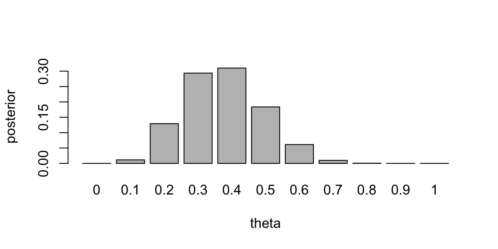
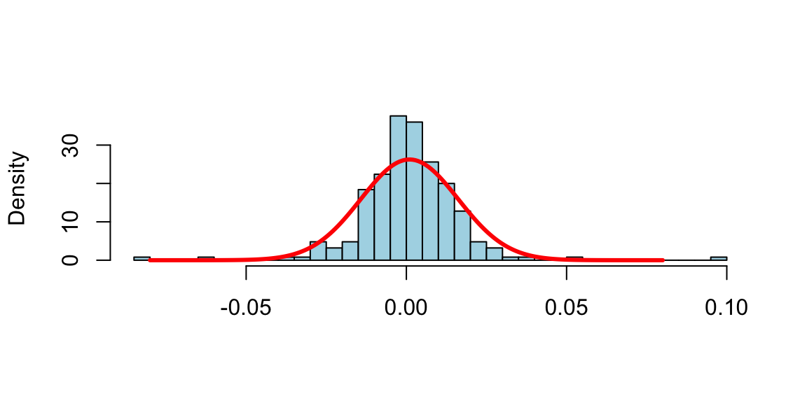

theta <- seq(0, 1, by = 0.1)
prior = c(0, 0.024, 0.077, 0.132, 0.173, 0.188, 0.173, 0.132, 0.077, 0.024, 0)
barplot(prior, names.arg = theta, xlab = "theta", ylab = "prior")
\[ \newcommand{\prob}[1]{\operatorname{P}\left(#1\right)} \newcommand{\Var}[1]{\operatorname{Var}\left(#1\right)} \newcommand{\sd}[1]{\operatorname{sd}\left(#1\right)} \newcommand{\Cor}[1]{\operatorname{Corr}\left(#1\right)} \newcommand{\Cov}[1]{\operatorname{Cov}\left(#1\right)} \newcommand{\E}[1]{\operatorname{E}\left(#1\right)} \newcommand{\defeq}{\overset{\text{\tiny def}}{=}} \DeclareMathOperator*{\argmax}{arg\,max} \DeclareMathOperator*{\argmin}{arg\,min} \DeclareMathOperator*{\mini}{minimize} \]
“Wise man proportions his beliefs to the evidence.” – David Hume
Statistics makes use of parametric families of distributions and make assumption that observed samples \(y = (y_1,\ldots,y_n)\) are independent and identically distributed observations from a distribution with density function parametrized by \(\theta\), the notation is \(y \sim p(y \mid \theta)\). The functional form of \(p(y \mid \theta)\) is assumed to be known, but the value of \(\theta\) is unknown. The goal of statistical inference is to estimate \(\theta\) from the observed data \(y_1,\ldots,y_n\). There are several tasks in statistical inference, including
In this section we present a general framework for statistical inference, known as Bayesian inference, which is based on the use of probability distributions to represent uncertainty and make inferences about unknown parameters. We will use the Bayes rule to update our beliefs about the parameters of a model based on new evidence or data. Bayesian inference provides a principled approach to statistical modeling and decision-making, and is widely used in various fields such as machine learning, econometrics, and engineering.
In the context of artificial intelligence and statistical modeling, Bayesian parameter learning is particularly relevant when dealing with models that have uncertain or unknown parameters. The goal is to update the probability distribution over the parameters of the model as new data becomes available. Suppose that you are interested in the values of k unknown quantities \[ \theta = (\theta_1, \ldots, \theta_k) \]
The basic steps involved in Bayesian parameter learning include:
Prior Distribution (Prior): Start with a prior distribution \[ p(\theta) \] that represents your beliefs or knowledge about the parameters before observing any data. This distribution encapsulates the uncertainty about the parameters.
Likelihood Function (Data Likelihood): Specify a likelihood function that describes the probability of observing the given data given the current values of the parameters. This function represents the likelihood of the observed data under different parameter values. Suppose you observe a set of data \(y = (y_1, \ldots, y_n)\), the likelihood function is given by \[ p(y \mid \theta) \] where \(\theta\) is the set of model parameters, and \(y\) is the observed data. The likelihood function captures the information in the data about the parameters.
Posterior Distribution (Posterior): Combine the prior distribution and the likelihood function using Bayes’ theorem to obtain the posterior distribution over the parameters. The posterior distribution represents the updated beliefs about the parameters after incorporating the observed data. \[ p( \theta | y ) = \frac{p(y \mid \theta)p( \theta)}{p(y)} \] The right hand side \(p( \theta | y )\) is the posterior distribution, and \(p(y)\) is the probability of the observed data (also known as the total probability) given by \[ p(y) = \int p(y \mid \theta)p( \theta)d \theta \]
Posterior as the New Prior (Iterative Process): Use the posterior distribution obtained from one round of observation as the prior distribution for the next round when more data becomes available. This process can be iteratively repeated as new evidence is acquired.
Bayesian Inference: Make predictions or draw inferences by summarizing the information in the posterior distribution. This may involve computing point estimates (e.g., mean, median) or credible intervals that capture a certain percentage of the parameter values.
The key advantage of Bayesian parameter learning is its ability to incorporate prior knowledge and update beliefs based on observed data in a principled manner. It provides a framework for handling uncertainty and expressing the confidence or ambiguity associated with parameter estimates. However, it often requires computational methods, such as Markov Chain Monte Carlo (MCMC) or variational inference, to approximate or sample from the complex posterior distributions.
The Bayes rule allows us to combine the prior distribution and the likelihood function, sometimes we omit the total probability in the denominator on the right hand side and write Bayes rule as \[ \text{Posterior} \propto \text{Likelihood} \times \text{Prior} \]
The choice of prior distribution can significantly impact the ease of computation and the interpretation of the posterior distribution. Conjugate priors are a special type of prior distribution that, when combined with a specific likelihood function, result in a posterior distribution that belongs to the same family as the prior. This property simplifies the computation of the posterior distribution, and allows for analytical solution.
Common examples of conjugate priors include:
Normal distribution with known variance: If the likelihood is a normal distribution with known variance, then a normal distribution is a conjugate prior for the mean.
Binomial distribution: If the likelihood is a binomial distribution, then a beta distribution is a conjugate prior for the probability of success.
Poisson distribution: If the likelihood is a Poisson distribution, then a Gamma distribution is a conjugate prior for the rate parameter.
Using conjugate priors simplifies the Bayesian analysis, especially in cases where analytical solutions are desirable. However, the choice of a conjugate prior is often a modeling assumption, and in some cases, non-conjugate priors may be more appropriate for capturing the true underlying uncertainty in the problem. The blind use of conjugate priors can lead to misleading results. We should never ignore the absence of evidence for use of a specific model.
At the basis of all statistical problems is a potential sample of data, \(y=\left( y_{1},\ldots,y_{T}\right)\), and assumptions over the data generating process such as independence, a model or models, and parameters. How should one view the relationship between models, parameters, and samples of data? How should one define a model and parameters? These questions have fundamental implications for statistical inference and can be answered from different perspectives. We will discuss the de Finetti’s representation theorem which provides a formal connection between data, models, and parameters.
To understand the issues, consider the simple example of an experiment consisting of tosses of a simple thumb tack in ideal “laboratory” conditions. The outcome of the experiment can be defined as a random variable \(y_{i},\) where \(y_{i}=1\) if the \(i^{th}\) toss was a heads (the tack lands on the spike portion) and \(y_{i}=0\) if the tack land tails (on its flat portion). How do we model these random variables? The frequentist or objective approach assumes tosses are independent and identically distributed. In this setting, independence implies that \[ P\left( y_{2}=1,y_{1}=1\right) =P\left( y_{2}=1\right) P\left( y_{1}=0\right) \text{.}% \]
Given this, are thumbtack tosses independent? Surprisingly, the answer is no. Or at least absolutely not under the current assumptions. Independence implies that \[ P\left( y_{2}=1 \mid y_{1}=1\right) =P\left( y_{2}=1\right) \text{,}% \] which means that observing \(y_{1}=1\) does not effect the probability that \(y_{2}=1\). To see the implications of this simple fact, suppose that the results of 500 tosses were available. If the tosses were independent, then \[ P\left( y_{501}=1\right) =P\left( y_{501}=1\mid {\textstyle\sum\nolimits_{t=1}^{500}}y_{t}=1\right) =P\left( y_{501}=1\mid {\textstyle\sum\nolimits_{t=1}^{500}}y_{t}=499\right) \text{.} \] It is hard to imagine that anyone would believe this–nearly every observer would state that the second probability is near zero and the third probably is near 1 as the first 500 tosses contain a lot of information. Thus, the tosses are not independent.
To see the resolution of this apparent paradox, introduce a parameter, \(\theta\), which is the probability that a thumb tack toss is heads. If \(\theta\) were known, then it is true that, conditional on the value of this parameter, the tosses are independent and \[ P\left( y_{2}=1\mid y_{1}=1,\theta\right) =P\left(y_{2}=1\mid \theta\right) =\theta\text{.} \] Thus, the traditional usage of independence, and independent sampling, requires that “true” parameter values are known. With unknown probabilities, statements about future tosses are heavily influenced by previous observations, clearly violating the independence assumption. Ironically, if the data was really independent, we would not need samples in the first place to estimate parameters because the probabilities would already be known! Given this, if you were now presented with a thumb tack from a box that was to be repeatedly tossed, do you think that the tosses are independent?
This example highlights the tenuous foundations, an odd circularity, and the internal inconsistency of the frequentist approach that proceeds under the assumption of a fixed “true” parameter. All frequentist procedures are founded on the assumption of known parameter values:sampling distributions of estimators are computed conditional on \(\theta\); confidence intervals consist of calculations of the form: \(P\left( f\left( y_{1}, \ldots ,y_{T}\right) \in\left( a,b\right) |\theta\right)\); and asymptotics also all rely on the assumption of known parameter values. None of these calculations are possible without assuming the known parameters.
In the frequentist approach, even though the parameter is completely unknown to the researcher, \(\theta\) is not a random variable, does not have a distribution, and therefore inference is not governed by the rules of probability. Given this “fixed, but unknown” definition, it is impossible to discuss concepts like “parameter uncertainty.” This strongly violates our intuition, since things that are not known are typically thought of as random.
The Bayesian approach avoids this internal inconsistency by shedding the strong assumption of independence and assumption of a fixed but unknown parameter. Instead it assumes that \(\theta\) is a random variable and describes the uncertainty about \(\theta\) using a probability distribution, \(p\left( \theta\right)\) (the prior). The joint distribution of the data is then \[ p(y_{1}, \ldots ,y_{T},\theta) = \int p(y_{1}, \ldots ,y_{T} \mid \theta) p(\theta)d\theta = \int\prod_{t=1}^Tp(y_t\mid \theta) p( \theta)d\theta. \] Notice, that the right-hand-side does not depend on the order of the data, and the joint distribution of the data is the same for all potential orderings. This is a natural assumption about the symmetry of the data, and is called exchangeability. The Bayesian approach makes no assumptions about the order in which the data may arrive, and each observation has the same marginal distribution, \(P\left( y_{i}=1\right) =P\left(y_{j}=1\right)\) for any \(i\) and \(j\).
Thus, we replace the independence assumption with a weaker and more natural assumption of exchangeability: collection of random variables, \(y_{1}, \ldots ,y_{T}\), is exchangeable if the distribution of \(y_{1}, \ldots ,y_{T}\) is the same as the distribution of any permutation \(y_{\pi_{1}}, \ldots ,y_{\pi_{T}}\), where \(\pi=\left( \pi_{1}, \ldots ,\pi_{T}\right)\) is a permutation of the integers \(1\) to \(T\). Independent events are always exchangeable, but the converse is not true. Notice the differences between the assumptions in the Bayesian and frequentist approach: the Bayesian makes assumptions over potentially realized data, and there is no need to invent the construct of a fixed but unknown parameter, since exchangeability makes no reference to parameters.
In the case of the tack throwing experiment, exchangeability states that the ordering of heads and tails does not matter. Thus, if the experiment of 8 tosses generated 4 heads, it does not matter if the ordering was \(\left(1,0,1,0,1,0,1,0\right)\) or \(\left( 0,1,1,0,1,0,0,1\right)\). This is a natural assumption about the symmetry of the tack tosses, capturing the idea that the information in any toss or sequence of tosses is the same as any other–the idea of a truly random sample. It is important to note that exchangeability is property that applies prior to viewing the data. After observation, data is no longer a random variable, but a realization of a random variable.
Bruno de Finetti introduced the notion of exchangeability, and then asked a simple question: “What do exchangeable sequences of random variables look like?” The answer to this question is given in the famous de Finetti’s theorem, which also defines models, parameters, and provides important linkages between frequentist and classical statistics.
de Finetti’s representation theorem provides the theoretical connection between data, models, and parameters. It is stated first in the simplest setting, where the observed data takes two values, either zero or one, and then extended below.
Theorem 3.1 (de Finetti’s Representation theorem) Let \(\left( y_{1},y_{2},\ldots\right)\) be an infinite sequence of 0-1 exchangeable random variables with joint density \(p\left(y_{1}, \ldots ,y_{T}\right)\). Then there exists a distribution function \(P\) such that \[ p(y_{1},\ldots,y_{T})=\int\prod_{t=1}^{T}\theta^{y_{t}}(1-\theta)^{1-y_{t}% }dP(\theta)=\int\prod_{t=1}^{T}p\left( y_{t} \mid \theta\right) dP(\theta) \tag{3.1}\] where \[ P(\theta)=\underset{T\rightarrow\infty}{\lim}\text{Prob}\left[ \frac{1}{T}\sum_{t=1}^{T}y_{t}\leq\theta\right] \text{ and }\theta=\underset {T\rightarrow\infty}{\lim}\frac{1}{T}\sum_{t=1}^{T}y_{t}\text{.}% \] If the distribution function or measure admits a density with respect to Lebesgue measure, then \(dP(\theta)=p\left( \theta\right) d\theta\).
de Finetti’s representation theorem has profound implications for understanding models from a subjectivist perspective and in relating subjectivist to frequentist theories of inference. The theorem is interpreted as follows:
Under exchangeability, parameters exist, and one can act as if the \(y_{t}\)’\(s\) are drawn independently from a Bernoulli distribution with parameter \(\theta\). That is, they are draws from the model \(p\left(y_{t} \mid \theta\right) =\theta^{y_{t}}(1-\theta)^{1-y_{t}},\) generating a likelihood function \(p\left( y \mid \theta\right) =\prod_{t=1}^{T}p\left(y_{t} \mid \theta\right)\). Formally, the likelihood function is defined via the density \(p\left( y \mid \theta\right)\), viewed as a function of \(\theta\) for a fixed sample \(y=\left( y_{1}, \ldots ,y_{T}\right)\). More “likely” parameter values generate higher likelihood values, thus the name. The maximum likelihood estimate or MLE is \[ \widehat{\theta}=\arg\underset{\theta\in\Theta}{\max}\text{ }p\left(y \mid \theta\right) =\arg\underset{\theta\in\Theta}{\max}\ln p\left(y \mid \theta\right) \text{,}% \] where \(\Theta\) is the parameter space.
Parameters are random variables. The limit \(\theta=\underset {T\rightarrow\infty}{\lim}T^{-1}\sum_{t=1}^{T}y_{t}\) exists but is a random variable. This can be contrasted with the strong law of large numbers that requires independence and implies that \(T^{-1}\sum_{t=1}^{T}y_{t}\) converges almost surely to a fixed value, \(\theta_{0}\). From this, one can interpret a parameter as a limit of observables and justifies the frequentist interpretation of \(\theta\) as a limiting frequency of 1’s.
The distribution \(P\left( \theta\right)\) or density \(p\left(\theta\right)\) can be interpreted as beliefs about the limiting frequency \(\theta\) prior to viewing the data. After viewing the data, beliefs are updated via Bayes rule resulting in the posterior distribution, \[ p\left( \theta \mid y\right) \propto p\left( y \mid \theta\right) p(\theta). \] Since the likelihood function is fixed in this case, any distribution of observed data can be generated by varying the prior distribution.
The main implication of de Finetti’s theorem is a complete justification for Bayesian practice of treating the parameters as random variables and specifying a likelihood and parameter distribution. Stated differently, a “model” consists of both a likelihood and a prior distribution over the parameters. Thus, parameters as random variables and priors are a necessity for statistical inference, and not some extraneous component motivated by philosophical concerns.
More general versions of de Finetti’s theorem are available. A general version is as follows. If \(\left\{ y_{t}\right\} _{t\geq1}\), \(y_{t}\in\mathbb{R}\), is a sequence of infinitely exchangeable random variables, then there exists a probability measure \(P\) on the space of all distribution functions, such that \[ P(y_{1},\ldots,y_{T})=\int\prod_{t=1}^{T}F\left( y_{t}\right) P(dF) \] with mixing measure \[ P\left( F\right) =\underset{T\rightarrow\infty}{\lim}P(F_{T}), \] where \(F_{T}\) is the empirical distribution of the data. At this level of generality, the distribution function is infinite-dimensional. In practice, additional subjective assumptions are needed that usually restrict the distribution function to finite dimensional spaces, which implies that distribution function is indexed by a parameter vector \(\theta\): \[ p(y_{1},\ldots,y_{T})=\int\prod_{t=1}^{T}p\left( y_{t} \mid \theta\right) dP\left( \theta\right) \text{.}% \] To operationalize this result, the researcher needs to choose the likelihood function and the prior distribution of the parameters.
At first glance, de Finetti’s theorem may seem to suggest that there is a single model or likelihood function. This is not the case however, as models can be viewed in the same manner as parameters. Denoting a model specification by \(\mathcal{M}\), then de Finetti’s theorem would imply that \[\begin{align*} p(y_{1},\ldots,y_{T}) & =\int\prod_{t=1}^{T}p\left( y_{t} \mid \theta ,\mathcal{M}\right) p\left( \theta \mid \mathcal{M}\right) p\left(\mathcal{M}\right) d\theta d\mathcal{M}\\ & =\int p(y_{1},\ldots,y_{T} \mid \mathcal{M})p\left( \mathcal{M}\right) d\mathcal{M}\text{,}% \end{align*}\] in the case of a continuum of models. Thus, under the mild assumption of exchangeability, it is as if the \(y_{t}\)’\(s\) are generated from \(p\left( y_{t} \mid \theta,\mathcal{M}\right)\), conditional on the random variables \(\theta\) and \(\mathcal{M}\), where \(p\left( \theta \mid \mathcal{M}\right)\) are the beliefs over \(\theta\) in model \(\mathcal{M}\), and \(p\left(\mathcal{M}_{j}\right)\) are the beliefs over model specifications.
The objective approach has been a prevailing one in scientific applications. However, it only applies to events that can be repeated under the same conditions a very large number of times. This is rarely the case in many important applied problems. For example, it is hard to repeat an economic event, such as a Federal Reserve meeting or the economic conditions in 2008 infinitely often. This implies that at best, the frequentist approach is limited to laboratory situations. Even in scientific applications, when we attempt to repeat an experiment multiple times, an objective approach is not guaranteed to work. For example, the failure rate of phase 3 clinical trials in oncology is 60% (Shen et al. (2021),Sun et al. (2022)). Prior to phase 3, the drug is usually tested on several hundred patients.
Subjective probability is a more general definition of probability than the frequentist definition, as it can be used for all types of events, both repeatable and unrepeatable events. A subjectivist has no problem discussing the probability a republican president will be re-elected in 2024, even though that event has never occurred before and cannot occur again. The main difficulty in operationalizing subjective probability is the process of actually quantifying subjective beliefs into numeric probabilities.
Instead of using repetitive experiments, subjective probabilities can be measured using betting odds, which have been used for centuries to gauge the uncertainty over an event. The probability attributed to winning a coin toss is revealed by the type of of odds one would accept to bet. Notice the difference between the frequentist and Bayesian approach. Instead of defining the probabilities via an infinite repeated experiment, the Bayesian approach elicits probabilities from an individual’s observed behavior.
Let \(\mathcal{M} = \{ f_\theta ( y ) : y \in \mathcal{Y} \}\) be a model. When necessary we index the parameters in model \(m\), as \(\theta_m\). Let \(y = ( y_1 , \ldots , y_n )\) be a vector of signals. The conditional likelihood, under \(m\), is given by \(f_\theta(y) = \prod_{i=1}^n f_\theta ( y_i )\). We also allow for the possibility that the data is generated from a model \(f\) that does not belong to the family of models \(f_\theta\).
Given a prior measure, \(\Pi ( d F )\), over \(\mathcal{F}\) the set of distributions, we can calculate the predictive density \[ f_n ( y_{n+1} | y_1 , \ldots , y_n ) = \int f (y) \Pi_n ( d F ) \; {\rm where} \; \Pi_n ( d f ) = \frac{ \prod_{i=1}^n f( y_i ) \Pi( d f ) }{ \int \prod_{i=1}^n f( y_i ) \Pi( d f ) } \] Under the family, $ f_\(, we can calculate the parameter posterior as\)$ p( | y ) = ; {} ; m(y) = f_(y) p( ) d $$ Here \(p(\theta)\) is a prior distribution over parameters and \(m(y)\) is the marginal distribution of the data implied by the model. There are many applications in Bayesian non-parametrics statistics.
A statistic \(S(y)\) is sufficient for \(\theta\), if the conditional distribution of \(y\) given \(S(y)\) is independent of \(\theta\), namely \[ p(y\mid S(y),\theta) = p(y\mid S(y)). \] Then, we can view \(S(y)\) as a dimension reducing map, as inference for \(\theta\) can be solely determined by \(S\). This follows as \(S(y)\) as a deterministic map of \(y\), so with \(P(S(y))>0\), we have \[ p(y,S(y)\mid \theta) = p(y\mid S(y),\theta)p(S(y)\mid \theta) = p(y\mid S(y))p(S(y)\mid \theta) \propto p(S(y)\mid\theta) \]
In Bayesian inference, we need to compute the posterior over unknown model parameters \(\theta\), given data \(y\). The posterior density is denoted by \(p(\theta \mid y)\). Here \(y = ( y_1 , \ldots , y_n )\) is high dimensional. A map from data to a real number or to a low-dimension vector \[ S = S(y) = ( S_1(y) , \ldots , S_k(y) ) \] is called a statistic. Since statistic is a deterministic function of the data, then \[ p(y\mid \theta) = p(y,S\mid \theta) = p(S\mid \theta)p(y\mid S,\theta). \] If it happens that the likelihood is conditionally independent on \(\theta\), given \(S\) then \[ p(y\mid \theta) = p(S\mid \theta)p(y\mid S). \] In this case the statistic \(S\) is called the sufficient statistic for parameter \(\theta\) given data \(y\). In other words all the information needed for estimating \(\theta\) is given by \(S\).
There is a nice connection between the posterior mean and the sufficient statistics, especially minimal sufficient statistics in the exponential family. If there exists a sufficient statistic \(S^*\) for \(\theta\), then Kolmogorov (1942) shows that for almost every \(y\), \(p(\theta\mid y) = p(\theta\mid S^*(y))\) , and further \(S(y) = E_{p}(\theta \mid y) = E_{p}(\theta \mid S^*(y))\) is a function of \(S^*(y)\). In the special case of an exponential family with minimal sufficient statistic \(S^*\) and parameter \(\theta\), the posterior mean \(S(y) = E_{p}(\theta \mid y)\) is a one-to-one function of \(S^*(y)\), and thus is a minimal sufficient statistic.
Summary Statistic: Let \(S(y)\) is sufficient summary statistic in the Bayes sense (Kolmogorov (1942)), if for every prior \(p\) \[ f_B (y) := p_{\theta \mid y}(\theta \in B\mid y) = p_{\theta \mid s(y)}(\theta \in B\mid s(y)). \] Then we need to use our pattern matching dataset \((y^{(i)} , \theta^{(i)})\) which is simulated from the prior and forward model to “train” the set of functions \(f_B (y)\), where we pick the sets \(B = ( - \infty , q ]\) for a quantile \(q\). Hence, we can then interpolate in between.
Estimating the full sequence of functions is then done by interpolating for all Borel sets \(B\) and all new data points \(y\) using a NN architecture and conditional density NN estimation.
The notion of a summary statistic is prevalent in the ABC literature and is tightly related to the notion of a Bayesian sufficient statistic \(S^*\) for \(\theta\), then (Kolmogorov 1942), for almost every \(y\), \[ p(\theta \mid Y=y) = p(\theta \mid S^*(Y) = S^*(y)) \] Furthermore, \(S(y) = \mathrm{E}\left(\theta \mid Y = y\right) = \mathrm{E}_{p}\left(\theta \mid S^*(Y) = S^*(y)\right)\) is a function of \(S^*(y)\). In the case of exponential family, we have \(S(Y) = \mathrm{E}_{p}\left(\theta | Y \right)\) is a one-to-one function of \(S^*(Y)\), and thus is a minimal sufficient statistic.
Sufficient statistics are generally kept for parametric exponential families, where \(S(\cdot)\) is given by the specification of the probabilistic model. However, many forward models have an implicit likelihood and no such structures. The generalization of sufficiency is a summary statistics (a.k.a. feature extraction/selection in a neural network). Hence, we make the assumption that there exists a set of features such that the dimensionality of the problem is reduced.
Example 3.1 (Posterior Distribution for Coin Toss) What if we gamble against unfair coin flips or the person who performs the flips is trained to get the side he wants? In this case, we need to estimate the probability of heads \(\theta\) from the data. Suppose we have observed 10 flips \[ \{H, T, H, H, H, T, H, T, H, H\}, \] and only three of them were tails. What is the probability that the next flip will be tail? The frequency-based answer would be \(3/10 = 0.3\). However, Bayes approach gives us more flexibility. Suppose we have a prior belief that the coin is fair, but we are not sure. We can model this belief by a prior distribution. Let discretize the variable \(\theta\) and assign prior probabilities to each value of \(\theta\) as follows
theta <- seq(0, 1, by = 0.1)
prior = c(0, 0.024, 0.077, 0.132, 0.173, 0.188, 0.173, 0.132, 0.077, 0.024, 0)
barplot(prior, names.arg = theta, xlab = "theta", ylab = "prior")
We put most of the mass to the fair assumption (\(\theta = 0.5\)) and zero mass to the extreme values \(\theta = 0\) and \(\theta = 1\). Our mass is exponentially decaying as we move away from 0.5. This is a reasonable assumption, since we are not sure about the fairness of the coin. Now, we can use Bayes rule to update our prior belief. The posterior distribution is given by \[ p(\theta \mid y) = \frac{p(y \mid \theta) p(\theta)}{p(y)}. \] The denominator is the marginal likelihood, which is given by \[ p(y) = \sum_{\theta} p(y \mid \theta) p(\theta). \] The likelihood is given by the Binomial distribution \[ p(y \mid \theta) \propto \theta^3 (1 - \theta)^7. \] Notice, that the posterior distribution depends only on the number of positive and negative cases. Those numbers are sufficient for the inference about \(\theta\). The posterior distribution is given by
likelihood <- function(theta, n, Y) {
theta^Y * (1 - theta)^(n - Y)
}
posterior <- likelihood(theta, 10,3) * prior
posterior <- posterior / sum(posterior) # normalize
barplot(posterior, names.arg = theta, xlab = "theta", ylab = "posterior")
If you are to keep collecting more observations and say observe a sequence of 100 flips, then the posterior distribution will be more concentrated around the value of \(\theta = 0.3\).
posterior <- likelihood(theta, 100,30) * prior
posterior <- posterior / sum(posterior) # normalize
barplot(posterior, names.arg = theta, xlab = "theta", ylab = "posterior")
This demonstrates that for large sample sizes, the frequentist approach and Bayes approach agree.
The Beta-Binomial Bayesian model is a statistical model that is used when we are interested in learning about a proportion or probability of success, denoted by \(p\). This model is particularly useful when dealing with binary data such as conversions or clicks in A/B testing.
In the Beta-Binomial model, we assume that the probability of success \(\theta\) in each of \(n\) Bernoulli trials is not fixed but randomly drawn from a Beta distribution. The Beta distribution is defined by two shape parameters, \(\alpha > 0\) and \(\beta > 0\).
The model combines the prior information about \(\theta\) (represented by the Beta distribution) and the observed data (represented by the Binomial distribution) to update our beliefs about \(p\). This is done using Bayes’ Rule, which in this context can be written as: \[ p(\theta \mid Y) = \dfrac{p(Y \mid \theta)p(\theta)}{p(Y)} \] where \(p(\theta)\) is the prior distribution (Beta), \(p(Y \mid \theta)\) is the likelihood function (Binomial), and \(p(\theta\mid Y)\) is the posterior distribution.
The Beta distribution is a family of continuous probability distributions defined on the interval [0,1] in terms of two positive parameters, denoted by alpha (\(\alpha\)) and beta (\(\beta\)), that appear as exponents of the variable and its complement to 1, respectively, and control the shape of the distribution. The Beta distribution is frequently used in Bayesian statistics, empirical Bayes methods, and classical statistics to model random variables with values falling inside a finite interval.
The probability density function (PDF) of the Beta distribution is given by: \[ Beta(x; \alpha, \beta) = \frac{x^{\alpha - 1}(1 - x)^{\beta - 1}}{B(\alpha, \beta)} \] where \(x \in [0, 1]\), \(\alpha > 0\), \(\beta > 0\), and \(B(\alpha, \beta)\) is the beta function. It is simply a normalizing constant \[ B\left( a,A\right) =\int_{0}^{1}\theta^{a-1}\left( 1-\theta\right) ^{A-1}d\theta . \]
The mean and variance of the Beta distribution are given by: \[ \begin{aligned} \mu &= \frac{\alpha}{\alpha + \beta} \\ \sigma^2 &= \frac{\alpha\beta}{(\alpha + \beta)^2(\alpha + \beta + 1)} \end{aligned} \] where \(\mu\) is the mean and \(\sigma^2\) is the variance.
The Beta-Binomial model is one of the simplest Bayesian models and is widely used in various fields including epidemiology, intelligence testing, and marketing. It provides the tools we need to study the proportion of interest, \(p\), in a variety of settings.
The nice property of the Beta-Binomial model is that the posterior \(p(p\mid Y)\) is yet another Beta distribution. Beta is called a conjugate prior for the Binomial likelihood and is a very useful property. Given that we observed \(x\) successful outcome \[ Y = \sum_{i=1}^n Y_i \] the posterior distribution is given by \[ p(\theta\mid Y) =Beta(Y+\alpha, n-Y+\beta) \] Here the count of successful outcome \(Y\) acts as a sufficient statistic for the parameter \(p\). This means that the posterior distribution depends on the data only through the sufficient statistic \(Y\). This is a very useful property and is a consequence of the conjugacy of the Beta prior and Binomial likelihood.
Example 3.2 (Black Swans) A related problem is the Black Swan inference problem. Suppose that after \(n\) trials where \(n\) is large you have only seen successes and that you assess the probability of the next trial being a success as \((T+1)/(T+2)\) that is, almost certain. This is a model of observing White Swans and having never seen a Black Swan. Taleb (2007) makes it sound as if the rules of probability are not rich enough to be able to handle Black Swan events. There is a related class of problems in finance known as Peso problems where countries decide to devalue their currencies and there is little a prior evidence from recent history that such an event is going to happen.
To obtain such a probability assessment we use a Binomial/Beta conjugate Bayes updating model. The key point is that it can also explain that there is still a large probability of a Black Swan event to happen sometime in the future. Independence model has difficulty doing this.
The Bayes Learning Beta-Binomial model will have no problem. We model with where \(Y_{t}=0\) or \(1\), with probability \(P\left( Y_{t}=1\mid \theta\right) =\theta\). This is the classic Bernoulli “coin-flipping” model and is a component of more general specifications such as regime switching or outlier-type models.
Let \(Y = \sum_{t=1}^{T}y_{t}\) be the number of observed successful outcomes. The likelihood for a sequence of Bernoulli observations is then \[ p\left( y\mid \theta\right) =\prod_{t=1}^{T}p\left( y_{t}\mid \theta\right) =\theta^{Y}\left( 1-\theta\right)^{T-Y}. \] The maximum likelihood estimator is the sample mean, \(\widehat{\theta} = T^{-1}Y\). This makes little sense when you just observe white swans. It predicts \(\hat{\theta} = 1\) and gets shocked when it sees a black swan (zero probability event). Bayes, on the other hand, allows for “learning”.
Bayes rule then tell us how to combine the likelihood and prior to obtain a posterior distribution, namely \(\theta \mid Y=y\). What do we believe about \(\theta\) given a sequence of. Our predictor rule is then \(P(Y_{t=1} =1 \mid Y=y ) = \mathbb{E}(\theta \mid y)\) it is straightforward to show that the posterior distribution is again a Beta distribution with \[ p\left( \theta\mid y\right) \sim Beta\left( a_{T},A_{T}\right) \; \mathrm{ and} \; a_{T}=a+k , A_{T}=A+T-k. \]
There is a “conjugate” form of the posterior: it is also a Beta distribution and the hyper-parameters \(a_{T}\) and \(A_{T}\) depend on the data only via the sufficient statistics, \(T\) and \(k\). The posterior mean and variance are \[ \mathbb{E}\left[ \theta\mid y\right] =\frac{a_{T}}{a_{T}+A_{T}} \;\text{ and }\; \Var{ \theta\mid y} =\frac{a_{T}A_{T}}{\left( a_{T}+A_{T}\right) ^{2}\left( a_{T}+A_{T}+1\right) }\text{,} \] respectively. This implies that for large samples, \(\E{\theta\mid y} \approx \bar{y} = \widehat{\theta}\), the MLE.
Suppose that after \(n\) trials where \(n\) is large you have only seen successes and that you assess the probability of the next trial being a success as \((T+1)/(T+2)\) that is, almost certain. This is a model of observing White Swans and having never seen a Black Swan. (Taleb, 2008, The Black Swan: the Impact of the Highly Improbable).
To obtain such a probability assessment a natural model is Binomial/Beta conjugate Bayesian updating model. We can access the probability that a black Swan event to happen sometime in the future.
For the purpose of illustration, start with a uniform prior specification, \(\theta \sim \mathcal{U}(0,1)\), then we have the following probability assessment. After \(T\) trials, suppose that we have only seen \(T\) successes, namely, \(( y_1 , \ldots , y_T ) = ( 1 , \ldots , 1 )\). Then you assess the probability of the next trial being a success as \[ p( Y_{T+1} =1 \mid y_1=1 , \ldots , y_T=1 ) = \frac{T+1}{T+2} \] This follows from the mean of the Beta posterior, \[ \theta \mid y \sim \text{Beta}(T+1, T+1), ~ P(Y_{T+1} = 1 \mid y) = \mathbb{E}_{\theta \mid y}\left[P(Y_{T=1} \mid \theta) \right] = \mathbb{E}[\theta \mid y]. \] For large \(T\) this is almost certain.
Now consider a future set of \(n\) trials, where \(n\) is also large. The probability of never seeing a Black Swan is then given by \[ p( y_{T+1} =1 , \ldots , y_{T+n} = 1 \mid y_1=1 , \ldots , y_T=1 ) = \frac{ T+1 }{ T+n+1 } \] For a fixed \(T\), and large \(n\), we have \(\frac{ T+1 }{ T+n+1 } \rightarrow 0\). Hence, we will see a Black Swan event with large probability — we just don’t know when! The exchangeable Beta-Binomial model then implies that a Black Swan event will eventually appear. One shouldn’t be that surprised when it actually happens.
Example 3.3 (Clinical trials) Consider a problem of designing clinical trials in which \(K\) possible drugs \(a\in 1,\dots,K\) need to be tested. The outcome of the treatment with drug \(a\) is binary \(y(a) \in \{0,1\}\). We use Bernoulli distribution with mean \(f(a)\) to model the outcome. Thus, the full probabilistic model is described by \(w = f(1),\dots,f(K)\). Say we have observed a sample \(D = \{y_1,\dots,y_n\}\). We would like to compute posterior distribution over \(w\). We start with \(Beta\) prior \[ p(w\mid \alpha,\beta) = \prod_{a=1}^K Beta(w_a\mid \alpha,\beta) \] Then posterior distribution is given by \[ p(w\mid D) = \prod_{a=1}^K Beta(w_a\mid \alpha + n_{a,1},\beta + n_{a,0}) \]
This setup allows us to perform sequential design of experiment. The simplest version of it is called the Thompson sampling. After observing \(n\) patients, we draw a single sample \(\tilde w\) from the posterior and then maximize the resulting surrogate \[ a_{n+1} = \argmax_{a} f_{\tilde w}(a), ~~~ \tilde{w} \sim p(w\mid D) \]
Example 3.4 (Shrinkage and baseball batting averages) The batter-pitcher match-up is a fundamental element of a baseball game. There are detailed baseball records that are examined regularly by fans and professionals. This data provides a good illustration of Bayesian hierarchical methods. There is a great deal of prior information concerning the overall ability of a player. However, we only see a small amount of data about a particular batter-pitcher match-up. Given the relative small sample size, to determine our optimal estimator we build a hierarchical model taking into account the within pitcher variation.
Let’s analyze the variability in Jeter’s \(2006\) season. Let \(p_{i}\) denote Jeter’s ability against pitcher \(i\) and assume that \(p_{i}\) varies across the population of pitchers according to a particular probability distribution \((p_{i} \mid \alpha,\beta)\sim Be(\alpha,\beta)\). To account for extra-binomial variation we use a hierarchical model for the observed number of hits \(y_{i}\) of the form \[ (y_{i} \mid p_{i})\sim Bin(T_{i},p_{i})\;\;\mathrm{with}\;\;p_{i}\sim Be(\alpha,\beta) \] where \(T_{i}\) is the number of at-bats against pitcher \(i\). A priori we have a prior mean given by \(E(p_{i})=\alpha/(\alpha+\beta)=\bar{p}\). The extra heterogeneity leads to a prior variance \(Var(p_{i})=\bar{p}(1-\bar{p})\phi\) where \(\phi=(\alpha+\beta+1)^{-1}\). Hence \(\phi\) measures how concentrated the beta distribution is around its mean, \(\phi=0\) means highly concentrated and \(\phi=1\) means widely dispersed.
This model assumes that each player \(i\) has a true ability \(p_{i}\) that is drawn from a common distribution. The model is hierarchical in the sense that the parameters \(\alpha\) and \(\beta\) are estimated from the data. The model is also a shrinkage model in the sense that the estimates of \(p_{i}\) are shrunk towards the overall mean \(\bar{p}_{i}\). In reality, we don’t know that each \(p_i\) exists. We also don’t know if it follows a Binomial distribution with the Beta prior. We are making a model assumption. However, the model is a good approximation to the data and is a good way to estimate the parameters.
Stern et al. (2007) estimates the parameter \(\hat{\phi} = 0.002\) for Derek Jeter, showing that his ability varies a bit but not very much across the population of pitchers. The effect of the shrinkage is not surprising. The extremes are shrunk the most with the highest degree of shrinkage occurring for the match-ups that have the smallest sample sizes. The amount of shrinkage is related to the large amount of prior information concerning Jeter’s overall batting average. Overall Jeter’s performance is extremely consistent across pitchers as seen from his estimates. Jeter had a season \(.308\) average. We see that his Bayes estimates vary from\(.311\) to\(.327\) and that he is very consistent. If all players had a similar record then the assumption of a constant batting average would make sense.
| Pitcher | At-bats | Hits | ObsAvg | EstAvg | 95% Int |
|---|---|---|---|---|---|
| R. Mendoza | 6 | 5 | .833 | .322 | (.282, .394) |
| H. Nomo | 20 | 12 | .600 | .326 | (.289, .407) |
| A.J.Burnett | 5 | 3 | .600 | .320 | (.275, .381) |
| E. Milton | 28 | 14 | .500 | .324 | (.291, .397) |
| D. Cone | 8 | 4 | .500 | .320 | (.218, .381) |
| R. Lopez | 45 | 21 | .467 | .326 | (.291, .401) |
| K. Escobar | 39 | 16 | .410 | .322 | (.281, .386) |
| J. Wettland | 5 | 2 | .400 | .318 | (.275, .375) |
| T. Wakefield | 81 | 26 | .321 | .318 | (.279, .364) |
| P. Martinez | 83 | 21 | .253 | .312 | (.254, .347) |
| K. Benson | 8 | 2 | .250 | .317 | (.264, .368) |
| T. Hudson | 24 | 6 | .250 | .315 | (.260, .362) |
| J. Smoltz | 5 | 1 | .200 | .314 | (.253, .355) |
| F. Garcia | 25 | 5 | .200 | .314 | (.253, .355) |
| B. Radke | 41 | 8 | .195 | .311 | (.247, .347) |
| D. Kolb | 5 | 0 | .000 | .316 | (.258, .363) |
| J. Julio | 13 | 0 | .000 | .312 | (.243, .350 ) |
| Total | 6530 | 2061 | .316 |
Some major league managers believe strongly in the importance of such data (Tony La Russa, Three days in August). One interesting example is the following. On Aug 29, 2006, Kenny Lofton (career \(.299\) average, and current \(.308\) average for \(2006\) season) was facing the pitcher Milton (current record \(1\) for \(19\)). He was rested and replaced by a \(.273\) hitter. Is putting in a weaker player rally a better bet? Was this just an over-reaction to bad luck in the Lofton-Milton match-up? Statistically, from Lofton’s record against Milton we have \(P\left( \leq 1\;\mathrm{hit\;in}\ 19\;\mathrm{attempts} \mid p=0.3\right) =0.01\) an unlikely \(1\)-in-\(100\) event. However, we have not taken into account the multiplicity of different batter-pitcher match-ups. We know that Loftin’s batting percentage will vary across different pitchers, it’s just a question of how much? A hierarchical analysis of Lofton’s variability gave a \(\phi=0.008\) – four times larger than Jeter’s \(\phi=0.002\). Lofton has batting estimates that vary from\(.265\) to \(.340\) with the lowest being against Milton. Hence, the optimal estimate for a pitch against Milton is \(.265<.275\) and resting Lofton against Milton is justified by this analysis.
The Poisson distribution is obtained as a result of the Binomial when \(p\) is small and \(n\) is large. In applications, the Poisson models count data. Suppose we want to model arrival rate of users to one of our stores. Let \(\lambda = np\), which is fixed and take the limit as \(n \rightarrow \infty\). There is a relationship between , \(p(x)\) ans \(p(x+1)\) given by \[ \dfrac{p(x+1)}{p(x)}= \dfrac{\left(\dfrac{n}{x+1}\right)p^{x+1}(1-p)^{n-x-1}}{\left(\dfrac{n}{x}\right)p^{x}(1-p)^{n-x}} \approx \dfrac{np}{x+1} \] If we approximate \(p(x+1)\approx \lambda p(x)/(x+1)\) with \(\lambda=np\), then we obtain the Poisson pdf given by \(p(x) = p(0)\lambda^x/x!\). To ensure that \(\sum_{x=0}^\infty p(x) = 1\), we set \[ f(0) = \dfrac{1}{\sum_{x=0}^{\infty}\lambda^x/x!} = e^{-\lambda}. \] The above equality follows from the power series property of the exponent function \[ e^{\lambda} = \sum_{x=0}^{\infty}\dfrac{\lambda^x}{x!} \] The Poisson distribution counts the occurrence of events. Given a rate parameter, denoted by \(\lambda\), we calculate probabilities as follows \[ p( X = x ) = \frac{ e^{-\lambda} \lambda^x }{x!} \; \mathrm{ where} \; x=0,1,2,3, \ldots \] The mean and variance of the Poisson are given by:
| Poisson Distribution | Parameters |
|---|---|
| Expected value | \(\mu = \E{X} = \lambda\) |
| Variance | \(\sigma^2 = \Var{X} = \lambda\) |
Here \(\lambda\) denotes the rate of occurrence of an event.
Consider the problem of modeling soccer scores in the English Premier League (EPL) games. We use data from Betfair, a website, which posts odds on many football games. The goal is to calculate odds for the possible scores in a match. \[ 0-0, \; 1-0, \; 0-1, \; 1-1, \; 2-0, \ldots \] Another question we might ask, is what’s the odds of a team winning?
This is given by \(P\left ( X> Y \right )\). The odds’s of a draw are given by \(P \left ( X = Y \right )\)?
Professional sports betters rely on sophisticated statistical models to predict the outcomes. Instead, we present a simple, but useful model for predicting outcomes of EPL games. We follow the methodology given in Spiegelhalter and Ng (2009).
First, load the data and then model the number of goals scored using Poisson distribution.
sdcdsc
df = read.csv("../data/epl.csv")
knitr::kable(head(df[,c("home_team_name","away_team_name","home_score","guest_score")]))| home_team_name | away_team_name | home_score | guest_score |
|---|---|---|---|
| Arsenal | Liverpool | 3 | 4 |
| Bournemouth | Manchester United | 1 | 3 |
| Burnley | Swansea | 0 | 1 |
| Chelsea | West Ham | 2 | 1 |
| Crystal Palace | West Bromwich Albion | 0 | 1 |
| Everton | Tottenham | 1 | 1 |
Let’s look at the empirical distribution across the number of goals scored by Manchester United
team_name="Manchester United"
team_for = c(df[df$home_team_name==team_name,"home_score"],df[df$away_team_name==team_name,"guest_score"])
n = length(team_for)
for_byscore = table(team_for)/n
barplot(for_byscore, col="coral", main="")
Hence the historical data fits closely to a Poisson distribution, the parameter \(\lambda\) describes the average number of goals scored and we calculate it by calculating the sample mean, the maximum likelihood estimate. A Bayesian method where we assume that \(\lambda\) has a Gamma prior is also available. This lets you incorporate outside information into the predictive model.
lambda_for = mean(team_for)
barplot(rbind(dpois(0:4, lambda = lambda_for),for_byscore),beside = T, col=c("aquamarine3","coral"), xlab="Goals", ylab="probability", main="")
legend("topright", c("Poisson","MU"), pch=15, col=c("aquamarine3", "coral"), bty="n")
Now we will use Poisson model and Monte Carlo simulations to predict possible outcomes of the MU vs Hull games. First we estimate the rate parameter for goals by MU lmb_mu and goals by Hull lmb_h. Each team played a home and away game with every other team, thus 38 total games was played by all teams. We calculate the average by dividing total number of goals scored by the number of games
sumdf = df %>%
group_by(home_team_name) %>%
summarise(Goals_For_Home = sum(home_score)) %>%
full_join(df %>%
group_by(away_team_name) %>%
summarise(Goals_For_Away = sum(guest_score)), by = c("home_team_name" = "away_team_name")
) %>%
full_join(df %>%
group_by(home_team_name) %>%
summarise(Goals_Against_Home = sum(guest_score))
) %>%
full_join(df %>%
group_by(away_team_name) %>%
summarise(Goals_Against_Away = sum(home_score)), by = c("home_team_name" = "away_team_name")
) %>%
rename(Team=home_team_name)
knitr::kable(sumdf[sumdf$Team %in% c("Manchester United", "Hull"),])| Team | Goals_For_Home | Goals_For_Away | Goals_Against_Home | Goals_Against_Away |
|---|---|---|---|---|
| Hull | 28 | 9 | 35 | 45 |
| Manchester United | 26 | 28 | 12 | 17 |
lmb_mu = (26+28)/38; print(lmb_mu) 1.4lmb_h = (28+9)/38; print(lmb_h) 0.97Now we simulate 100 games between the teams
x = rpois(100,lmb_mu)
y = rpois(100,lmb_h)
sum(x>y) 57sum(x==y) 18knitr::kable(table(x,y))| 0 | 1 | 2 | 3 | 4 | |
|---|---|---|---|---|---|
| 0 | 8 | 4 | 6 | 0 | 0 |
| 1 | 22 | 5 | 10 | 1 | 1 |
| 2 | 7 | 11 | 4 | 3 | 0 |
| 3 | 5 | 5 | 3 | 1 | 0 |
| 4 | 2 | 1 | 1 | 0 | 0 |
From our simulation that 57 number of times MU wins and 18 there is a draw. The actual outcome was 0-0 (Hull at MU) and 0-1 (Mu at Hull). Thus our model fives a reasonable prediction.
The model can be improved by calculating different averages for home and away games. For example, Hull does much better at home games compared to away games. Further, we can include the characteristics of the opponent team to account for interactions between attack strength (number of scored) and defense weakness of the opponent. Now we modify our value of expected goals for each of the teams by calculating \[ \hat \lambda = \lambda \times \text{Defense weakness} \]
Let’s model the MU at Hull game. The average away goals for MU \(28/19 = 1.47\) and the defense weakness of Hull is \(36/19 = 1.84\), thus the adjusted expected number of goals to be scored by MU is 2.79. Similarly, the adjusted number of the goals Hull is expected to score is \(28/19 \times 17/19 = 1.32\)
As a result of the simulation, we obtain
set.seed(1)
x <- rpois(100, 28 / 19 * 35 / 19)
y <- rpois(100, 28 / 19 * 17 / 19)
knitr::kable(table(x, y))| 0 | 1 | 2 | 3 | 4 | 5 | |
|---|---|---|---|---|---|---|
| 0 | 1 | 3 | 0 | 0 | 0 | 0 |
| 1 | 3 | 5 | 6 | 1 | 1 | 0 |
| 2 | 4 | 16 | 7 | 3 | 0 | 0 |
| 3 | 6 | 7 | 2 | 3 | 0 | 0 |
| 4 | 4 | 7 | 5 | 2 | 1 | 0 |
| 5 | 2 | 3 | 1 | 2 | 0 | 2 |
| 6 | 1 | 0 | 0 | 1 | 0 | 0 |
| 7 | 1 | 0 | 0 | 0 | 0 | 0 |
image(z = table(x, y), x = 0:7, y = 0:5, xlab = "MU Score", ylab = "Hull Score")
Now we can calculate the number of times MU wins:
sum(x > y) 67A model is only as good as its predictions. Let’s see how our model did in out-of-sample prediction,
Example 3.5 (EPL Betting) Fen et al. (2016) employ a Skellam process (a difference of Poisson random variables) to model real-time betting odds for English Premier League (EPL) soccer games. Given a matrix of market odds on all possible score outcomes, we estimate the expected scoring rates for each team. The expected scoring rates then define the implied volatility of an EPL game. As events in the game evolve, they re-estimate the expected scoring rates and our implied volatility measure to provide a dynamic representation of the market’s expectation of the game outcome. They use real-time market odds data for a game between Everton and West Ham in the 2015-2016 season. We show how the implied volatility for the outcome evolves as goals, red cards, and corner kicks occur.
Gambling on soccer is a global industry with revenues of over $1 trillion a year (see “Football Betting - the Global Gambling Industry worth Billions,” BBC Sport). Betting on the result of a soccer match is a rapidly growing market, and online real-time odds exist (Betfair, Bet365, Ladbrokes). Market odds for all possible score outcomes (\(0-0, 1-0, 0-1, 2-0, \ldots\)) as well as outright win, lose, and draw are available in real time. In this paper, we employ a two-parameter probability model based on a Skellam process and a non-linear objective function to extract the expected scoring rates for each team from the odds matrix. The expected scoring rates then define the implied volatility of the game.
Skellam Process
To model the outcome of a soccer game between team A and team B, we let the difference in scores, \(N(t) = N_A(t) - N_B(t)\), where \(N_A(t)\) and \(N_B(t)\) are the team scores at time point \(t\). Negative values of \(N(t)\) indicate that team A is behind. We begin at \(N(0) = 0\) and end at time one with \(N(1)\) representing the final score difference. The probability \(\mathbb{P}(N(1) > 0)\) represents the ex-ante odds of team A winning. Half-time score betting, which is common in Europe, is available for the distribution of \(N(\frac{1}{2})\).
Then we find a probabilistic model for the distribution of \(N(1)\) given \(N(t) = \ell\), where \(\ell\) is the current lead. This model, together with the current market odds, can be used to infer the expected scoring rates of the two teams and then to define the implied volatility of the outcome of the match. We let \(\lambda^A\) and \(\lambda^B\) denote the expected scoring rates for the whole game. We allow for the possibility that the scoring abilities (and their market expectations) are time-varying, in which case we denote the expected scoring rates after time \(t\) by \(\lambda^A_t\) and \(\lambda^B_t\), respectively, instead of \(\lambda^A(1-t)\) and \(\lambda^B(1-t)\).
The Skellam distribution is defined as the difference between two independent Poisson variables given by:
\[ \begin{aligned} N_A(t) &= W_A(t) + W(t) \\ N_B(t) &= W_B(t) + W(t) \end{aligned} \]
where \(W_A(t)\), \(W_B(t)\), and \(W(t)\) are independent processes with:
\[ W_A(t) \sim \text{Poisson}(\lambda^A t), \quad W_B(t) \sim \text{Poisson}(\lambda^B t). \]
Here \(W(t)\) is a non-negative integer-valued process to induce a correlation between the numbers of goals scored. By modeling the score difference, \(N(t)\), we avoid having to specify the distribution of \(W(t)\) as the difference in goals scored is independent of \(W(t)\). Specifically, we have a Skellam distribution:
\[ N(t) = N_A(t) - N_B(t) \sim \text{Skellam}(\lambda^A t, \lambda^B t). \tag{3.2}\]
At time \(t\), we have the conditional distributions:
\[ \begin{aligned} W_A(1) - W_A(t) &\sim \text{Poisson}(\lambda^A(1-t)) \\ W_B(1) - W_B(t) &\sim \text{Poisson}(\lambda^B(1-t)). \end{aligned} \]
Now letting \(N^*(1-t)\), the score difference of the sub-game which starts at time \(t\) and ends at time 1 and the duration is \((1-t)\). By construction, \(N(1) = N(t) + N^*(1-t)\). Since \(N^*(1-t)\) and \(N(t)\) are differences of two Poisson process on two disjoint time periods, by the property of Poisson process, \(N^*(1-t)\) and \(N(t)\) are independent. Hence, we can re-express equation (Equation 3.2) in terms of \(N^*(1-t)\), and deduce
\[ %N^*(1-t) = W^*_A(1-t) - W^*_B(1-t) \sim Skellam(\lambda^A (1-t),\lambda^B (1-t) ) N^*(1-t) = W^*_A(1-t) - W^*_B(1-t) \sim \text{Skellam}(\lambda^A_t,\lambda^B_t) \]
where \(W^*_A(1-t) = W_A(1) - W_A(t)\), \(\lambda^A = \lambda^A_0\) and \(\lambda^A_t=\lambda^A(1-t)\). A natural interpretation of the expected scoring rates, \(\lambda^A_t\) and \(\lambda^B_t\), is that they reflect the “net” scoring ability of each team from time \(t\) to the end of the game. The term \(W(t)\) models a common strength due to external factors, such as weather. The “net” scoring abilities of the two teams are assumed to be independent of each other as well as the common strength factor. We can calculate the probability of any particular score difference, given by \(\mathbb{P}(N(1)=x|\lambda^A,\lambda^B)\), at the end of the game where the \(\lambda\)’s are estimated from the matrix of market odds. Team strength and “net” scoring ability can be influenced by various underlying factors, such as the offensive and defensive abilities of the two teams. The goal of our analysis is to only represent these parameters at every instant as a function of the market odds matrix for all scores.
Another quantity of interest is the conditional probability of winning as the game progresses. If the current lead at time \(t\) is \(\ell\), and \(N(t)=\ell=N_A(t)-N_B(t)\), the Poisson property implied that the final score difference \((N(1)|N(t)=\ell)\) can be calculated by using the fact that \(N(1)=N(t)+N^*(1-t)\) and \(N(t)\) and \(N^*(1-t)\) are independent. Specifically, conditioning on \(N(t)=\ell\), we have the identity
\[ N(1)=N(t)+N^*(1-t)=\ell+\text{Skellam}(\lambda^A_t,\lambda^B_t). \]
We are now in a position to find the conditional distribution (\(N(1)=x|N(t)=\ell\)) for every time point \(t\) of the game given the current score. Simply put, we have the time homogeneous condition
\[ \begin{aligned} \mathbb{P}(N(1)=x|\lambda^A_t,\lambda^B_t,N(t)=\ell) &= \mathbb{P}(N(1)-N(t)=x-\ell |\lambda^A_t,\lambda^B_t,N(t)=\ell) \\ &= \mathbb{P}(N^* (1-t)=x-\ell |\lambda^A_t,\lambda^B_t) \end{aligned} \]
where \(\lambda^A_t\), \(\lambda^B_t\), \(\ell\) are given by market expectations at time \(t\). See Feng et al. for details.
Market Calibration
Our information set at time \(t\) includes the current lead \(N(t) = \ell\) and the market odds for \(\{Win, Lose, Draw, Score\}_t\), where \(Score_t = \{ ( i - j ) : i, j = 0, 1, 2, ....\}\). These market odds can be used to calibrate a Skellam distribution which has only two parameters \(\lambda^A_t\) and \(\lambda^B_t\). The best fitting Skellam model with parameters \(\{\hat\lambda^A_t,\hat\lambda^B_t\}\) will then provide a better estimate of the market’s information concerning the outcome of the game than any individual market (such as win odds) as they are subject to a “vig” and liquidity. Suppose that the fractional odds for all possible final score outcomes are given by a bookmaker. In this case, the bookmaker pays out three times the amount staked by the bettor if the outcome is indeed 2-1. Fractional odds are used in the UK, while money-line odds are favored by American bookmakers with \(2:1\) (“two-to-one”) implying that the bettor stands to make a $200 profit on a $100 stake. The market implied probability makes the expected winning amount of a bet equal to 0. In this case, the implied probability \(p=1/(1+3)=1/4\) and the expected winning amount is \(\mu=-1*(1-1/4)+3*(1/4)=0\). We denote this odds as \(odds(2,1)=3\). To convert all the available odds to implied probabilities, we use the identity
\[ \mathbb{P}(N_A(1) = i, N_B(1) = j)=\frac{1}{1+odds(i,j)}. \]
The market odds matrix, \(O\), with elements \(o_{ij}=odds(i-1,j-1)\), \(i,j=1,2,3...\) provides all possible combinations of final scores. Odds on extreme outcomes are not offered by the bookmakers. Since the probabilities are tiny, we set them equal to 0. The sum of the possible probabilities is still larger than 1 (see Dixon and Coles (1997) and Dixon and Coles (1997)). This “excess” probability corresponds to a quantity known as the “market vig.” For example, if the sum of all the implied probabilities is 1.1, then the expected profit of the bookmaker is 10%. To account for this phenomenon, we scale the probabilities to sum to 1 before estimation.
To estimate the expected scoring rates, \(\lambda^A_t\) and \(\lambda^B_t\), for the sub-game \(N^*(1-t)\), the odds from a bookmaker should be adjusted by \(N_A(t)\) and \(N_B(t)\). For example, if \(N_A(0.5)=1\), \(N_B(0.5)=0\) and \(odds(2,1)=3\) at half time, these observations actually says that the odds for the second half score being 1-1 is 3 (the outcomes for the whole game and the first half are 2-1 and 1-0 respectively, thus the outcome for the second half is 1-1). The adjusted \({odds}^*\) for \(N^*(1-t)\) is calculated using the original odds as well as the current scores and given by
\[ {odds}^*(x,y)=odds(x+N_A(t),y+N_B(t)). \]
At time \(t\) \((0\leq t\leq 1)\), we calculate the implied conditional probabilities of score differences using odds information
\[ \mathbb{P}(N(1)=k|N(t)=\ell)=\mathbb{P}(N^*(1-t)=k-\ell)=\frac{1}{c}\sum_{i-j=k-\ell}\frac{1}{1+{odds}^*(i,j)}\]
where \(c=\sum_{i,j} \frac{1}{1+{odds}^*(i,j)}\) is a scale factor, \(\ell=N_A(t)-N_B(t)\), \(i,j\geq 0\) and \(k=0,\pm 1,\pm 2\ldots\).
Example: Everton vs West Ham (3/5/2016)
Table below shows the implied Skellam probabilities.
| Everton West Ham | 0 | 1 | 2 | 3 | 4 | 5 |
|---|---|---|---|---|---|---|
| 0 | 11/1 | 12/1 | 28/1 | 66/1 | 200/1 | 450/1 |
| 1 | 13/2 | 6/1 | 14/1 | 40/1 | 100/1 | 350/1 |
| 2 | 7/1 | 7/1 | 14/1 | 40/1 | 125/1 | 225/1 |
| 3 | 11/1 | 11/1 | 20/1 | 50/1 | 125/1 | 275/1 |
| 4 | 22/1 | 22/1 | 40/1 | 100/1 | 250/1 | 500/1 |
| 5 | 50/1 | 50/1 | 90/1 | 150/1 | 400/1 | |
| 6 | 100/1 | 100/1 | 200/1 | 250/1 | ||
| 7 | 250/1 | 275/1 | 375/1 | |||
| 8 | 325/1 | 475/1 |
Table Table 3.1 shows the raw data of odds right the game. We need to transform odds data into probabilities. For example, for the outcome 0-0, 11/1 is equivalent to a probability of 1/12. Then we can calculate the marginal probability of every score difference from -4 to 5. We neglect those extreme scores with small probabilities and rescale the sum of event probabilities to one.
| Score difference | -4 | -3 | -2 | -1 | 0 | 1 | 2 | 3 | 4 | 5 |
|---|---|---|---|---|---|---|---|---|---|---|
| Market Prob. (%) | 1.70 | 2.03 | 4.88 | 12.33 | 21.93 | 22.06 | 16.58 | 9.82 | 4.72 | 2.23 |
| Skellam Prob. (%) | 0.78 | 2.50 | 6.47 | 13.02 | 19.50 | 21.08 | 16.96 | 10.61 | 5.37 | 2.27 |
Table Table 3.2 shows the model implied probability for the outcome of score differences before the game, compared with the market implied probability. As we see, the Skellam model appears to have longer tails. Different from independent Poisson modeling in Dixon and Coles (1997), our model is more flexible with the correlation between two teams. However, the trade-off of flexibility is that we only know the probability of score difference instead of the exact scores.

Figure Figure 3.1 examines the behavior of the two teams and represent the market predictions on the final result. Notably, we see the probability change of win/draw/loss for important events during the game: goals scoring and a red card penalty. In such a dramatic game, the winning probability of Everton gets raised to 90% before the first goal of West Ham in 78th minutes. The first two goals scored by West Ham in the space of 3 minutes completely reverses the probability of winning. The probability of draw gets raised to 90% until we see the last-gasp goal of West Ham that decides the game.
Figure Figure 3.1 plots the path of implied volatility throughout the course of the game. Instead of a downward sloping line, we see changes in the implied volatility as critical moments occur in the game. The implied volatility path provides a visualization of the conditional variation of the market prediction for the score difference. For example, when Everton lost a player by a red card penalty at 34th minute, our estimates \(\hat\lambda^A_t\) and \(\hat\lambda^B_t\) change accordingly. There is a jump in implied volatility and our model captures the market expectation adjustment about the game prediction. The change in \(\hat\lambda_A\) and \(\hat\lambda_B\) are consistent with the findings of Vecer, Kopriva, and Ichiba (2009) where the scoring intensity of the penalized team drops while the scoring intensity of the opposing team increases. When a goal is scored in the 13th minute, we see the increase of \(\hat\lambda^B_t\) and the market expects that the underdog team is pressing to come back into the game, an effect that has been well-documented in the literature. Another important effect that we observe at the end of the game is that as goals are scored (in the 78th and 81st minutes), the markets expectation is that the implied volatility increases again as one might expect.

| t | 0 | 0.11 | 0.22 | 0.33 | 0.44 | 0.50 | 0.61 | 0.72 | 0.83 | 0.94 | 1 |
|---|---|---|---|---|---|---|---|---|---|---|---|
| \(\hat\lambda^A_t/(1-t)\) | 2.33 | 2.51 | 2.53 | 2.46 | 1.89 | 1.85 | 2.12 | 2.12 | 2.61 | 4.61 | 0 |
| \(\hat\lambda^B_t/(1-t)\) | 1.44 | 1.47 | 1.59 | 1.85 | 2.17 | 2.17 | 2.56 | 2.90 | 3.67 | 5.92 | 0 |
| \((\hat\lambda^A_t+\hat\lambda^B_t)/(1-t)\) | 3.78 | 3.98 | 4.12 | 4.31 | 4.06 | 4.02 | 4.68 | 5.03 | 6.28 | 10.52 | 0 |
| \(\sigma_{IV,t}\) | 1.94 | 1.88 | 1.79 | 1.70 | 1.50 | 1.42 | 1.35 | 1.18 | 1.02 | 0.76 | 0 |
Figure Figure 3.2 compares the updating implied volatility of the game with implied volatilities of fixed \((\lambda^A+\lambda^B)\). At the beginning of the game, the red line (updating implied volatility) is under the “(\(\lambda^A+\lambda^B=4)\)”-blue line; while at the end of the game, it’s above the “(\(\lambda^A+\lambda^B=8)\)”-blue line. As we expect, the value of \((\hat\lambda^A_t + \hat\lambda^B_t)/(1-t)\) in Table Table 3.3 increases throughout the game, implying that the game became more and more intense and the market continuously updates its belief in the odds.
Consider a continuous-time stochastic process, \(\left\{ N_{t}\right\} _{t\geq0}\), with \(N_{0}=0\), counting the number of events that have occurred up to time \(t\). The process is constant between event times, and jumps by one at event times: \(\Delta N_{t}=N_{t}-N_{t-}=1,\) where \(N_{t-}\) is the limit from the left. The probability of an event over the next short time interval, \(\Delta t\) is \(\lambda\Delta t\), and \(N_{t}\) is called a Poisson process because \[ P\left[ N_{t}=k\right] =\frac{e^{-\lambda t}\left( \lambda t\right) ^{k}}{k!}\text{ for }k=1,\ldots \] which is the Poisson distribution, thus \(N_{t}\sim Poi\left(\lambda t\right)\). A more general version of the Poisson process is a Cox process, or doubly stochastic point process.
Here, there is additional conditioning information in the form of state variables, \(\left\{X_{t}\right\}_{t>0}\). The process now has two sources of randomness, one associated with the discontinuous jumps and another in the form of random state variables, \(\left\{X_{t}\right\}_{t>0}\), that drive the intensity of the process. The intensity of the Cox process is \(\lambda_{t}=\int_{0}^{t}\lambda\left( X_{s}\right) ds\), which is formally defined as \[ P\left[ N_{t}-N_{s}=k \mid \left\{ X_{u}\right\} _{s\leq u\leq t}\right] =\frac{\left( \int_{s}^{t}\lambda\left( X_{s}\right) ds\right) ^{k}\exp\left( -\int_{s}^{t}\lambda\left( X_{s}\right) ds\right)}{k!}, ~ k=0,1,\ldots \] Cox processes are very useful extensions to Poisson processes and are the basic building blocks of reduced form models of defaultable bonds.
The inference problem is to learn about \(\lambda\) from a continuous-record of observation up to time \(t\). The likelihood function is given by \[ p\left( N_{t}=k \mid \lambda\right) =\frac{\left( \lambda t\right) ^{k}% \exp\left( -\lambda t\right) }{k!}, \] and the MLE is \(\widehat{\lambda}=N_{t}/t\). The MLE has the unattractive property that prior to the first event \(\left\{ t:N_{t}=0\right\}\), the MLE is 0, despite the fact that the model explicitly assumes that events are possible. This problem often arises in credit risk contexts, where it would seem odd to assume that the probability of default is zero just because a default has not yet occurred.
A natural prior for this model is the Gamma distribution, which has the following pdf \[ p\left( \lambda \mid a,A\right) =\frac{A^{a}}{\Gamma(a) }\lambda^{a-1}\exp\left( -A\lambda\right) \text{.} \tag{3.3}\] Like the beta distribution, a Gamma prior distribution allows for a variety of prior shapes and is parameterized by two hyperparameters. Combining the prior and likelihood, the posterior is also Gamma: \[ p\left( \lambda \mid N_{t}\right) \propto\frac{\left( \lambda\right) ^{N_{t}+a-1}\exp\left( -\lambda\left( t+A\right) \right) }{N_{t}!}% \sim\mathcal{G}\left( a_{t},A_{t}\right) , \] where \(a_{t}=N_{t}+a\) and \(A_{t}=t+A\). The expected intensity, based on information up to time \(t\), is \[ \mathbb{E}\left[ \lambda \mid N_{t}\right] =\frac{a_{t}}{A_{t}}=\frac{N_{t}% +a}{t+A}=w_{t}\frac{N_{t}}{t}+\left( 1-w_{t}\right) \frac{a}{A}, \] where the second line expresses the posterior mean in shrinkage form as a weighted average of the MLE and the prior mean where \(w_{t}=t/(t+A)\). In large samples, \(w_{t}\rightarrow1\) and \(E\left( \lambda \mid N_{t}\right) \approx N_{t}/t=\widehat{\lambda}\).
To understand the updating mechanics, Figure 3.3 (right column) displays a simulated sample path, posterior means, and (5%,95%) posterior quantiles for various prior configurations. In this case, time is measured in years and the intensity used to simulate the data is \(\lambda=1\), implying on average one event per year. The four prior configurations embody different beliefs. In the first case, in the middle left panel, \(a=4\) and \(A=1\), captures a high-activity prior, that posits that jumps occur, on average, four times per year, and there is substantial prior uncertainty over the arrival rate as the (5%,95%) prior quantiles are (1.75,6.7). In the second case, captures a prior that is centered over the true value with modest prior uncertainty. The third case captures a low-activity prior, with a prior mean of 0.2 jumps/year. The fourth case captures a dogmatic prior, that posits that jumps occur three times per year, with high confidence in these beliefs.
The priors were chosen to highlight different potential paths for Bayesian learning. The first thing to note from the priors is the discontinuity upward at event times, and the exponential decrease during periods of no events, both of which are generic properties of Bayesian learning in this model. If one thinks of the events as rare, this implies rapid revisions in beliefs at event times and a constant drop in estimates of the intensity in periods of no events. For the high-activity prior and the sample path observed, the posterior begins well above \(\lambda=1\), and slowly decreases, getting close to \(\lambda=1\) at the end of the sample. This can be somewhat contrasted with the low-activity prior, which has drastic revisions upward at jump times. In the dogmatic case, there is little updating at event times. The prior parameters control how rapidly beliefs change, with noticeable differences across the priors.
set.seed(8) # Ovi
t = 1:5
lmb = 1
N = rpois(5,t*lmb)
# A: rate (beta), a: shape (alpha)
plotgamma = function(a,A,N) {
x = seq(0,10,0.01)
plot(x,dgamma(x,a,A),type="l",xlab="t",ylab="Gamma(t)")
at = N+a
At = t+A
mean = at/At
plot(N, type='l', col="orange", ylim=c(0,5), xlab="t", ylab="N(t)")
lines(mean, col="blue", lwd=3, lty=2)
lines(qgamma(0.05,at,At), col="grey", lwd=1, lty=2)
lines(qgamma(0.95,at,At), col="grey", lwd=1, lty=2)
}
plotgamma(a=4,A=1, N)
plotgamma(a=1,A=1, N)
plotgamma(a=1,A=5, N)
plotgamma(a=30,A=10, N)


Poisson event models are often embedded as portion of more complicated model to capture rare events such as stock market crashes, volatility surges, currency revaluations, or defaults. In these cases, prior distributions are often important–even essential–since it is common to build models with events that could, but have not yet occurred. These events are often called ‘Peso’ events. For example, in the case of modeling corporate defaults a researcher wants to allow for a jump to default. This requires positing a prior distribution that places non-zero probability on an event occurring. Classical statistical methods have difficulties dealing with these situations since the MLE of the jump probability is zero, until the first event occurs.
The Normal or Gaussian distribution is central to probability and statistical inference. Suppose that we are trying to predict tomorrow’s return on the S&P500. There’s a number of questions that come to mind
What is the random variable of interest?
How can we describe our uncertainty about tomorrow’s outcome?
Instead of listing all possible values we’ll work with intervals instead. The probability of an interval is defined by the area under the probability density function.
Returns are are continuous (as opposed to discrete) random variables. Hence a normal distribution would be appropriate - but on what scale? We will see that on the log-scale a Normal distribution provides a good approximation.
The most widely used model for a continuous random variable is the normal distribution. Standard normal random variable \(Z\) has the following properties
The standard Normal has mean \(0\) and has a variance \(1\), and is written as \[ Z \sim N(0,1) \] Then, we have the probability statements of interest \[\begin{align*} P(-1 <Z< 1) &=0.68\\ P(-1.96 <Z< 1.96) &=0.95\\ \end{align*}\]
In R, we can find probabilities
pnorm(1.96) 0.98and quantiles
qnorm(0.9750) 2The quantile function qnorm is the inverse of pnorm.
A random variable that follows normal distribution with general mean and variance \(X \sim \mbox{N}(\mu, \sigma^2)\), has the following properties \[\begin{align*} p(\mu - 2.58 \sigma < X < \mu + 2.58 \sigma) &=& 0.99 \\ p(\mu - 1.96 \sigma < X < \mu + 1.96 \sigma) &=& 0.95 \, . \end{align*}\] The chance that \(X\) will be within \(2.58 \sigma\) of its mean is \(99\%\), and the chance that it will be within \(2\sigma\) of its mean is about \(95\%\).
The probability model is written \(X \sim N(\mu,\sigma^2)\), where \(\mu\) is the mean, \(\sigma^2\) is the variance. This can be transformed to a standardized normal via \[ Z =\frac{X-\mu}{\sigma} \sim N(0,1). \] For a normal distribution, we know that \(X \in [\mu-1.96\sigma,\mu+1.96\sigma]\) with probability 95%. We can make similar claims for any other distribution using the Chebyshev’s empirical rule, which is valid for any population:
At least 75% probability lies within 2\(\sigma\) of the mean \(\mu\)
At least 89% lies within 3\(\sigma\) of the mean \(\mu\)
At least \(100(1-1/m^2)\)% lies within \(m\times \sigma\) of the mean \(\mu\).
This also holds true for the Normal distribution. The percentages are \(95\)%, \(99\)% and \(99.99\)%.
Example 3.6 (Google Stock 2019) Consider observations of daily log-returns of a Google stock for 2019 Daily log-return on day \(t\) is calculated by taking a logarithm of the ratio of price at close of day \(t\) and at close of day \(t-1\) \[ y_t = \log\left(\dfrac{P_t}{P_{t-1}}\right) \] For example on January 3 of 2017, the open price is 778.81 and close price was 786.140, then the log-return is \(\log(786.140/778.81) = -0.0094\). It was empirically observed that log-returns follow a Normal distribution. This observation is a basis for Black-Scholes model with is used to evaluate future returns of a stock.
p = read.csv("../data/GOOG2019.csv")$Adj.Close; n = length(p)
r = log(p[2:n]/p[1:(n-1)])
hist(r, breaks=30, col="lightblue", main="")
Observations on the far right correspond to the days when positive news was released and on the far left correspond to bad news. Typically, those are days when the quarterly earnings reports are released.
To estimate the expected value \(\mu\) (return) and standard deviation \(\sigma\) (a measure of risk), we simply calculate their sample counterparts \[ \bar{x} = \frac{1}{n} \sum_{i=1}^n x_i, ~\mathrm{ and }~ s^2 = \frac{1}{n-1} \sum_{i=1}^n (x_i - \bar{x} )^2 \] The empirical (or sample) values \(\bar x\) and \(s^2\) are called sample mean and sample variance. Here simply vie them as our best guess about the mean and variance of the normal distribution model then our probabilistic model for next day’s return is then given by \[ R \sim N(\bar x, s^2). \]
Say we are interested in investing into Google and would like to calculated the expected return of our investment as well as risk associated with this investment We assume that behavior of the returns in the future will be the same as in 2019.
n = length(r)
rbar = sum(r)/n; print(rbar) 0.00098s2 = sum((r-rbar)^2)/(n-1); print(s2) 0.00023x = seq(-0.08,0.08, length.out = 200)
hist(r, breaks=30, col="lightblue", freq = F, main="", xlab="")
lines(x,dnorm(x,rbar,sqrt(s2)), col="red", lwd=2)
Now, assume, I invest all my portfolio into Google. I can predict my annual return to be \(251 \times 9.8\times 10^{-4}\) = 0.25 and risk (volatility) of my investment is \(\sqrt{s^2}\) = 0.02% a year.
I can predict the risk of loosing 3% or more in one day using my model is 1.93%.
pnorm(log(1-0.03), rbar, sqrt(s2))*100 1.9sp = read.csv("../data/SPMonthly.csv")$Adj.Close; n = length(sp)
spret = sp[602:n]/sp[601:(n-1)]-1 # Calculate 1977-1987 returns mean(spret) 0.012sd(spret) 0.043Let \(Y\) be a random variable with a normal distribution, \(Y \sim N(\mu, \sigma^2)\). The mean \(\mu\) is unknown, but the variance \(\sigma^2\) is known. The likelihood function is given by \[ p(y \mid \mu) = \frac{1}{\sqrt{2\pi\sigma^2}}\exp\left(-\frac{1}{2\sigma^2}(y-\mu)^2\right) \] The MLE of \(\mu\) is \(\hat{\mu} = \bar{y}\), the sample mean. Normal prior for the mean parameter \(\mu\) is conjugate to the normal likelihood. \[ \mu \sim N(\mu_0, \sigma_0^2) \] The posterior distribution is also normal. \[ p(\mu \mid y) \sim N(\mu_n, \sigma_n^2) \]
where \[ \mu_n = \frac{\sigma^2}{n\sigma_0^2 + \sigma^2}\mu_0 + \frac{n\sigma_0^2}{n\sigma_0^2 + \sigma^2}\bar{y} \] and \[ \sigma_n^2 = \frac{\sigma^2\sigma_0^2}{n\sigma_0^2 + \sigma^2} \] The posterior mean is a weighted average of the prior mean and the sample mean, with the weights being proportional to the precision of the prior and the likelihood. The posterior variance is smaller than the prior variance, and the sample size \(n\) appears in the denominator. The posterior mean is a shrinkage estimator of the sample mean, and the amount of shrinkage is controlled by the prior variance \(\sigma_0^2\). A couple of observations \[ \frac{\sigma^2}{n\sigma_0^2 + \sigma^2} \rightarrow 0 \text{ and } \frac{n\sigma_0^2}{n\sigma_0^2 + \sigma^2}\rightarrow 1, \text{ as } n \rightarrow \infty. \] Further, \[ \frac{\sigma^2\sigma_0^2}{n\sigma_0^2 + \sigma^2} \rightarrow 0 \text{ as } n \rightarrow \infty. \]
Example 3.7 (Stylezed Example) Assuming the prior distribution \(\mu \sim N(-1,1)\), say we observed \(y=2\) and we want to update our beliefs about \(\mu\). The likelihood function is \(p(y \mid \mu) = N(\mu,2)\), and the posterior distribution is \[ p(\mu \mid y) \propto p(y \mid \mu) p(\mu) = N(y\mid \mu,2) N(\mu\mid -1,1) = N(-0.4,0.9). \]
mu0 = -1
sigma0 = 1
ybar = 2
sigma = 2
mu1 = (mu0/sigma0^2 + ybar/sigma^2)/(1/sigma0^2 + 1/sigma^2)
sigma1 = sqrt(1/(1/sigma0^2 + 1/sigma^2))
sprintf("Posterior mean: %f, Posterior variance: %f", mu1, sigma1) "Posterior mean: -0.400000, Posterior variance: 0.894427"Graphically we can represent this as follows
# The prior distribution
mu = seq(-4,10,0.01)
y = seq(-4,10,0.01)
# Prior
plot(mu,dnorm(mu,mu0,sigma0),type="l",xlab="x",ylab="p(x)",lwd=2,col="blue",ylim=c(0,0.5))
# The likelihood function
lines(y,dnorm(y,ybar,sigma),type="l",lwd=2,col="red")
# The posterior distribution
lines(y,dnorm(y,mu1,sigma1),type="l",lwd=2,col="green")
# legend
legend("topright", c("Prior"," Data (Likelihood)","Posterior"), pch=15, col=c("blue", "red", "green"), bty="n")Note, the posterior mean is in between those of prior and likelihood and posterior variance is lower than variance of both prior and likelihood, this is effect of combining information from data and prior!
More generally, when we observe \(n\) independent and identically distributed (i.i.d.) data points \(y_1,\ldots,y_n\) from a normal distribution with known variance \(\sigma^2\), the likelihood function is given by \[ p(y \mid \mu) = N(\bar y\mid \mu,\sigma^2/n),~ \text{where}~ \bar y = \frac{1}{n}\sum_{i=1}^n y_i. \] Note, that average over the observed data \(\bar y = \mathrm{Ave}(y_1,\ldots,y_n)\) is the sufficient statistics for the mean \(\mu\). The prior distribution is given by \[ p(\mu) = N(\mu\mid \mu_0,\sigma_0^2) \] The posterior distribution is given by \[ \begin{split} p(\mu\mid y) & \propto \exp\Bigg[{\frac{-\mu^2+2\mu\mu_0-\mu_0^2}{2\sigma_0^2}}\Bigg]\exp\Bigg[{\frac{-\mu^2+2\mu\bar{y}-\bar{y}^2}{2\sigma^2/n}}\Bigg] \\ & \propto \exp\Bigg[{\frac{-\mu^2+2\mu\mu_0}{2\sigma_0^2}}\Bigg]\exp\Bigg[{\frac{-\mu^2+2\mu\bar{y}}{2\sigma^2/n}}\Bigg]. \\ \end{split} \] Now we combine the terms \[ \begin{split} p(\mu\mid y) & \propto \exp\Bigg[{\frac{(-\mu^2+2\mu\mu_0)\sigma^2 +(-\mu^2+2\mu\bar{y})n\sigma_0^2}{2\sigma_0^2\sigma^2}}\Bigg]. \\ \end{split} \] Now re-arrange and combine \(\mu^2\) and \(\mu\) terms \[ \begin{split} p(\mu\mid y) & \propto \exp\Bigg[{\frac{-\mu^2(n\sigma_0^2+\sigma^2)+2\mu(\mu_0\sigma^2+ \bar{y}n\sigma_0^2) }{2\sigma_0^2\sigma^2}}\Bigg] \\ & \propto \exp\Bigg[{\frac{-\mu^2+2\mu\left(\frac{\mu_0\sigma^2 + \bar{y}n\sigma_0^2}{n\sigma_0^2+\sigma^2}\right) }{2(\sigma_0^2\sigma^2) /(n\sigma_0^2+\sigma^2)}}\Bigg]. \\ \end{split} \] Now we add constants which do not depend upon \(\mu\) to complete the square in the numerator: \[ \begin{split} p(\mu\mid y) & \propto \exp\Bigg[{\frac{-\bigg(\mu - \frac{\mu_0\sigma^2 + \bar{y}n\sigma_0^2}{n\sigma_0^2+\sigma^2}\bigg)^2 }{2(\sigma_0^2\sigma^2) /(n\sigma_0^2+\sigma^2)}}\Bigg]. \\ \end{split} \] Finally we get the posterior mean \[ \mu_n = \frac{\mu_0\sigma^2+ \bar{y}n\sigma_0^2}{n\sigma_0^2+\sigma^2} = \mu_0\frac{\sigma^2}{n\sigma_0^2+\sigma^2} + \bar{y}\frac{n\sigma_0^2}{n\sigma_0^2+\sigma^2} \] and the posterior variance \[ \sigma_n^2 = \frac{\sigma_0^2\sigma^2}{n\sigma_0^2+\sigma^2}. \]
Example 3.8 (Chicago Bears 2014-2015 Season) The Chicago Bears are a professional American football team based in Chicago, Illinois. The Bears were a young team in 2014-2015, an were last in the their division. This season the Chicago Bears suffered back-to-back \(50\)-points defeats and lost to Patriots and Packers.
Their next game was at home against the Minnesota Vikings. Current line against the Vikings was \(-3.5\) points. Slightly over a field goal. What’s the Bayes approach to learning the line? We use hierarchical data and Bayes learning to update our beliefs in light of new information. The current average win/lose this year can be modeled as a normal distribution with mean \(\mu\) and standard deviation \(\sigma\). We assume that \(\mu\) is normally distributed with mean \(\mu_0\) and standard deviation \(\tau\). \[\begin{align*} \bar{y} \mid \mu & \sim N \left ( \mu , \frac{\sigma^2}{n} \right ) \sim N \left ( \mu , \frac{18.34^2}{9} \right )\\ \mu & \sim N( 0 , \tau^2 ) \end{align*}\] Here \(n =9\) games so far. With \(s = 18.34\) points. We assume the pre-season prior mean \(\mu_0 = 0\), standard deviation \(\tau = 4\). Base on the observed data so-far: \(\bar{y} = -9.22\).
The Bayes Shrinkage estimator is then \[ \mathbb{E} \left( \mu \mid \tau, \bar y \right) = \frac{ \tau^2 }{ \tau^2 + \frac{\sigma^2}{n} }\bar{y} . \]
The shrinkage factor is \(0.3\)! That’s quite a bit of shrinkage. Why? Our updated estimator is \[ \mathbb{E} \left ( \mu | \bar{y} , \tau \right ) = - 2.75 > -.3.5 \] where current line is \(-3.5\).
bears=c(-3,8,8,-21,-7,14,-13,-28,-41)
print(mean(bears)) -9.2print(sd(bears)) 18tau=4
sig2=sd(bears)*sd(bears)/9
print(tau^2/(sig2+tau^2)) 0.3print(0.29997*-9.22) -2.8print(pnorm(-2.76/18)) 0.44Home advantage is worth \(3\) points. The actual result of the game is Bears 21, Vikings 13.
Posterior Predictive
The posterior predictive distribution is the distribution of a new observation \(y_{n+1}\) given the observed data \(y_1,\ldots,y_n\). The posterior predictive distribution is given by \[
p(y_{n+1} \mid y_1,\ldots,y_n) = \int p(y_{n+1} \mid \mu) p(\mu \mid y_1,\ldots,y_n) d\mu = \int N(y_{n+1} \mid \mu, \sigma^2) N(\mu \mid \mu_n, \sigma_n^2) d\mu = N(y_{n+1} \mid \mu_n, \sigma_n^2 + \sigma^2).
\] This follows from the general properties of the Gaussian distribution
Consider, another example, when mean \(\mu\) is fixed and variance is a random variable which follows some distribution \(\sigma^2 \sim p(\sigma^2)\). Given an observed sample \(y\), we can update the distribution over variance using the Bayes rule \[ p(\sigma^2 \mid y) = \dfrac{p(y\mid \sigma^2 )p(\sigma^2)}{p(y)}. \] Now, the total probability in the denominator can be calculated as \[ p(y) = \int p(y\mid \sigma^2 )p(\sigma^2) d\sigma^2. \]
A conjugate prior that leads to analytically calculable integral for variance under the normal likelihood is the inverse Gamma. Thus, if \[ \sigma^2 \mid \alpha,\beta \sim IG(\alpha,\beta) = \dfrac{\beta^{\alpha}}{\Gamma(\alpha)}\sigma^{2(-\alpha-1)}\exp\left(-\dfrac{\beta}{\sigma^2}\right) \] and \[ y \mid \mu,\sigma^2 \sim N(\mu,\sigma^2) \] Then the posterior distribution is another inverse Gamma \(IG(\alpha_{\mathrm{posterior}},\beta_{\mathrm{posterior}})\), with \[ \alpha_{\mathrm{posterior}} = \alpha + 1/2, ~~\beta_{\mathrm{posterior}} = \beta + \dfrac{y-\mu}{2}. \]
Now, the predictive distribution over \(y\) can be calculated by \[ p(y_{new}\mid y) = \int p(y_{new},\sigma^2\mid y)p(\sigma^2\mid y)d\sigma^2. \] Which happens to be a \(t\)-distribution with \(2\alpha_{\mathrm{posterior}}\) degrees of freedom, mean \(\mu\) and variance \(\alpha_{\mathrm{posterior}}/\beta_{\mathrm{posterior}}\).
Now, consider the case when both mean and variance are unknow. To simplify the formulas, we will use precision \(\rho = 1/\sigma^2\) instead of variance \(\sigma^2\). The normal-Gamma distribution is a conjugate prior for the normal distribution, when we do not know the precision and the mean. Given the observed data \(Y = \{y_1,\ldots,y_n\}\), we assume normal likelihood \[ y_i \mid \theta, \rho \sim N(\theta, 1/\rho) \]
The normal-gamma prior distribution is defined as \[ \theta\mid \mu,\rho,\nu \sim N(\mu, 1/(\rho \nu)), \quad \rho \mid \alpha, \beta \sim \text{Gamma}(\alpha, \beta). \] Thus, \(1/\rho\) has inverse-Gamma distribution with parameters \(\alpha\) and \(\beta\). Conditional on \(\rho\), the mean \(\theta\) has normal distribution with mean \(\mu\) and precision \(\nu\rho\). Notice that in this model the mean \(\theta\) and precision \(\rho\) are not independent. When the precision of observations \(\rho\) is low, we are also less certain about the mean. However, when \(\nu=0\), we have an improper uniform distribution over \(\theta\), that is independent of \(\rho\). There is no conjugate distribution for \(\theta,\rho\) in which \(\theta\) is independent of \(\rho\). Given the normal likelihood \[ p(y\mid \theta, \rho) = \left(\dfrac{\rho}{2\pi}\right)^{1/2}\exp\left(-\dfrac{\rho}{2}\sum_{i=1}^n(y_i-\theta)^2\right) \] and the normal-gamma prior \[ p(\theta, \rho \mid \mu,\nu,\alpha,\beta) = \dfrac{\beta^\alpha}{\Gamma(\alpha)}\nu\rho^{\alpha-1}\exp(-\beta\rho)\left(\dfrac{\nu\rho}{2\pi}\right)^{1/2}\exp\left(-\dfrac{\nu\rho}{2}(\theta-\mu)^2\right) \] the posterior distribution is given by \[ p(\theta, \rho\mid y) \propto p(y\mid \theta, \rho)p(\theta, \rho). \] The posterior distribution is a normal-Gamma distribution with parameters \[ \begin{aligned} \mu_n &= \dfrac{\nu\mu + n\bar{y}}{\nu+n},\\ \nu_n &= \nu+n,\\ \alpha_n &= \alpha + \dfrac{n}{2},\\ \beta_n &= \beta + \dfrac{1}{2}\sum_{i=1}^n(y_i-\bar{y})^2 + \dfrac{n\nu}{2(\nu+n)}(\bar{y}-\mu)^2. \end{aligned} \] where \(\bar{y} = n^{-1}\sum_{i=1}^n y_i\) is the sample mean and \(n\) is the sample size. The posterior distribution is a normal-Gamma distribution with parameters \(\mu_n, \nu_n, \alpha_n, \beta_n\).
The precission posterior follows a Gamma distribution with parameters \(\alpha_n, \beta_n\), thus we can use quantiles of the Gamma distribution to calculate credible intervals. A symmetric \(100(1-c)%\) credible interval \([g_{c/2},g_{1-c/2}]\) is given by \(c/2\) and \(1-c/2\) quantiles of the gamma distrinution. To find credible intterval for the variance \(v = 1/\rho\), we simply use \[ [1/g_{1-c/2},1/g_{c/2}]. \] and for standard deviation \(s = \sqrt{v}\) we use \[ [\sqrt{1/g_{1-c/2}},\sqrt{1/g_{c/2}}]. \] To find credible interval over the mean \(\theta\), we need to integrate out the precision \(\rho\) from the posterior distribution. The marginal distribution of \(\theta\) is a Student’s t-distribution with parameters center at \(\mu_n\), variance \(\beta_n/(\nu_n\alpha_n)\) and degrees of freedom \(2\alpha_n\).
In the multivariate case, the normal-normal model is \[ \theta \sim N(\mu_0,\Sigma_0), \quad y \mid \theta \sim N(\theta,\Sigma). \] The posterior distribution is \[ \theta \mid y \sim N(\mu_1,\Sigma_1), \] where \[ \Sigma_1 = (\Sigma_0^{-1} + \Sigma^{-1})^{-1}, \quad \mu_1 = \Sigma_1(\Sigma_0^{-1}\mu_0 + \Sigma^{-1}y). \] The predictive distribution is \[ y_{new} \mid y \sim N(\mu_1,\Sigma_1 + \Sigma). \]
Example 3.9 (Satya Nadella: CEO of Microsoft) In 2014, Satya Nadella became the CEO of Microsoft. The stock price of Microsoft has been on a steady rise since then. Suppose that you are a portfolio manager and you are interested in analyzing the returns of Microsoft stock compared to the market.
Suppose you are managing a portfolio with two positions stock of Microsoft (MSFT) and an index fund that follows S&P500 index and tracks overall market performance. We are interested in estimating the mean returns of the positions in our portfolio. You believe that the returns are normally distributed and are related to each other. You have prior beliefs about these returns, which are also normally distributed. We will use what is called the empirical prior for the mean returns. This is a prior that is based on historical data. The empirical prior is a good choice when you have a lot of historical data and you believe that the future mean returns will be similar to the historical mean returns. We assume the prior for the mean returns is a bivariate normal distribution, let \(\mu_0 = (\mu_{M}, \mu_{S})\) represent the prior mean returns for the stocks. The covariance matrix \(\Sigma_0\) captures your beliefs about the variability and the relationship between these stocks’ returns in the prior. We will use the sample mean and covariance matrix of the historical returns as the prior mean and covariance matrix. The prior covariance matrix is given by \[ \Sigma_0 = \begin{bmatrix} \sigma_{M}^2 & \sigma_{MS} \\ \sigma_{MS} & \sigma_{S}^2 \end{bmatrix}, \] where \(\sigma_{M}^2\) and \(\sigma_{S}^2\) are the sample variances of the historical returns of MSFT and SPY, respectively, and \(\sigma_{MS}\) is the sample covariance of the historical returns of MSFT and SPY. The prior mean is given by \[ \mu_0 = \begin{bmatrix} \mu_{M} \\ \mu_{S} \end{bmatrix}, \] where \(\mu_{M}\) and \(\mu_{S}\) are the sample means of the historical returns of MSFT and SPY, respectively. The likelihood of observing the data, given the mean returns, is also a bivariate normal distribution. The mean of this distribution is the true (but unknown) mean returns \(\mu = [\mu_A, \mu_B]\). The covariance matrix \(\Sigma\) of the likelihood represents the uncertainty in your data. We will use the sample mean and covariance matrix of the observed returns as the likelihood mean and covariance matrix. The likelihood covariance matrix is given by \[ \Sigma = \begin{bmatrix} \sigma_{M}^2 & \sigma_{MS} \\ \sigma_{MS} & \sigma_{S}^2 \end{bmatrix}, \] where \(\sigma_{M}^2\) and \(\sigma_{S}^2\) are the sample variances of the observed returns of MSFT and SPY, respectively, and \(\sigma_{MS}\) is the sample covariance of the observed returns of MSFT and SPY. The likelihood mean is given by \[ \mu = \begin{bmatrix} \mu_{M} \\ \mu_{S} \end{bmatrix}, \] where \(\mu_{M}\) and \(\mu_{S}\) are the sample means of the observed returns of MSFT and SPY, respectively. In a Bayesian framework, you update your beliefs (prior) about the mean returns using the observed data (likelihood). The posterior distribution, which combines your prior beliefs and the new information from the data, is also a bivariate normal distribution. The mean \(\mu_{\text{post}}\) and covariance \(\Sigma_{\text{post}}\) of the posterior are calculated using Bayesian updating formulas, which involve \(\mu_0\), \(\Sigma_0\), \(\mu\), and \(\Sigma\).
We use observed returns prior to Nadella’s becoming CEO as our prior and analyze the returns post 2014. Thus, our observed data includes July 2015 - Dec 2023 period. We assume the likelihood of observing this data, given the mean returns, is also a bivariate normal distribution. The mean of this distribution is the true (but unknown) mean returns. The covariance matrix \(Sigma\) of the likelihood represents the uncertainty in your data and is calculated from the overall observed returns data 2001-2023.
getSymbols(c("MSFT", "SPY"), from = "2001-01-01", to = "2023-12-31") "MSFT" "SPY" s = 3666 # 2015-07-30
prior = 1:s
obs = s:nrow(MSFT) # post covid
# obs = 5476:nrow(MSFT) # 2022-10-06 bull run if 22-23
a = as.numeric(dailyReturn(MSFT))
c = as.numeric(dailyReturn(SPY))
# Prior
mu0 = c(mean(a[prior]), mean(c[prior]))
Sigma0 = cov(data.frame(a=a[prior],c=c[prior]))
# Data
mu = c(mean(a[obs]), mean(c[obs]))
Sigma = cov(data.frame(a=a,c=c))
# Posterior
SigmaPost = solve(solve(Sigma0) + solve(Sigma))
muPost = SigmaPost %*% (solve(Sigma0) %*% mu0 + solve(Sigma) %*% mu)
# Plot
plot(a[obs], c[obs], xlab="MSFT", ylab="SPY", xlim=c(-0.005,0.005), ylim=c(-0.005,0.005), pch=16, cex=0.5)
abline(v=0, h=0, col="grey")
abline(v=mu0[1], h=mu0[2], col="blue",lwd=3) #prior
abline(v=mu[1], h=mu[2], col="red",lwd=3) #data
abline(v=muPost[1], h=muPost[2], col="green",lwd=3) #posterior
legend("bottomright", c("Prior", "Likelihood", "Posterior"), pch=15, col=c("blue", "red", "green"), bty="n")We can see the posterior mean for SPY is close to the prior mean, while the posterior mean for MSFT is further away. The performance of MSFT was significantly better past 2015 compared to SPY. The posterior mean (green) represents mean reversion value. We can think of it a expected mean return if the performance of MSFT starts reverting to its historical averages.
This model is particularly powerful because it can be extended to more dimensions (more stocks) and can include more complex relationships between the variables. It’s often used in finance, econometrics, and other fields where understanding the joint behavior of multiple normally-distributed variables is important.
The mixture of conjugate priors is a powerful tool for modeling complex data. It allows us to combine multiple conjugate priors to create a more flexible model that can capture a wider range of data patterns. The mixture of conjugate priors is particularly useful when the data is generated from a mixture of distributions, where each component of the mixture is generated from a different distribution.
If \(p_1(x),\ldots,p_k(x)\) are proper density functions and \(\pi_1,\ldots,\pi_k\) are non-negative weights that sum to 1, then the mixture distribution is given by \[ p(x) = \sum_{i=1}^k \pi_i p_i(x). \] It is easy to show that \(p(x)\) is a proper density. Indeed, given domain \(x\in A\subset \mathbb{R}\) we have \[ \int_A p(x)dx = \sum_{i=1}^k \pi_i \int_A p_i(x)dx = \sum_{i=1}^k \pi_i = 1. \]
Assume our prior is a mixture of distributions, that is \[ \theta \sim p(\theta) = \sum_{k=1}^K \pi_k p_k(\theta). \] Then the posterior is also a mixture of normal distributions, that is \[ p(\theta\mid y) = p(y\mid \theta)\sum_{k=1}^K \pi_k p_k(\theta)/C. \] We introduce a normalizing constant for each component \[ C_k = \int p(y\mid \theta)p_k(\theta)d\theta. \] then \[ p_k(\theta\mid y) = p_k(\theta)p(y\mid \theta)/C_k \] is a proper distribution and our posterior is a mixture of these distributions \[ p(\theta\mid y) = \sum_{k=1}^K \pi_k C_k p_k(\theta\mid y)/C. \] Meaning that we need to require \[ \dfrac{\sum_{k=1}^K \pi_k C_k}{C} = 1. \] or \[ C = \sum_{k=1}^K \pi_k C_k \] Then the posterior density is a mixture \[ p(\theta\mid y) = \sum_{k=1}^K \hat \pi_k p_k(\theta \mid y), \] where \[ \hat \pi_k = \dfrac{\pi_k C_k}{\sum_{i=1}^{K}\pi_i C_i} \] are the posterior weights.
Consider an example of a mixture of two normal distributions. The prior distribution is a mixture of two normal distributions, that is \[ \mu \sim 0.5 N(0,1) + 0.5 N(5,1). \] The likelihood is a normal distribution with mean \(\mu\) and variance 1, that is \[ y \mid \mu \sim N(\mu,1). \] The posterior distribution is a mixture of two normal distributions, that is \[ p(\mu \mid y) \propto \phi(y\mid \mu,1) \left(0.5 \phi(\mu\mid 0,1) + 0.5 \phi(\mu\mid 5,1)\right), \] where \(\phi(x\mid \mu,\sigma^2)\) is the normal distribution with mean \(\mu\) and variance \(\sigma^2\). We can calculate it using property of a normal distribution \[ \phi(x\mid \mu_1,\sigma_1^2)\phi(x\mid \mu_2,\sigma_2^2) = \phi(x\mid \mu_3,\sigma_3^2)\phi(\mu_1-\mu_2\mid 0,\sigma_1^2+\sigma_2^2) \] where \[ \mu_3 = \dfrac{\mu_1/\sigma_2^2 + \mu_2/\sigma_1^2}{1/\sigma_1^2 + 1/\sigma_2^2}, \quad \sigma_3^2 = \dfrac{1}{1/\sigma_1^2 + 1/\sigma_2^2}. \]
Given, we observed \(y = 2\), we can calculate the posterior distribution for \(\mu\)
mu0 = c(0,5)
sigma02 = c(1,1)
pi = c(0.5,0.5)
y = 2
mu3 = (mu0/sigma02 + y) / (1/sigma02 + 1)
sigma3 = 1/(1/sigma02 + 1)
C = dnorm(y-mu0,0,1+sigma02)*pi
w = C/sum(C)
sprintf("Component parameters:\nMean = (%1.1f,%2.1f)\nVar = (%1.1f,%1.1f)\nweights = (%1.2f,%1.2f)", mu3[1],mu3[2], sigma3[1],sigma3[2],w[1],w[2]) "Component parameters:\nMean = (1.0,3.5)\nVar = (0.5,0.5)\nweights = (0.65,0.35)"Exponential distribution is a continuous distribution that is often used to model waiting times between events. For example, the time between two consecutive arrivals of a Poisson process is exponentially distributed. If the number of events in 1 unit of time has the Poisson distribution with rate parameter \(\lambda\), then the time between events has the exponential distribution with mean \(1/\lambda\). The probability density function (PDF) of an exponential distribution is defined as: \[ f(x;\lambda) = \lambda e^{-\lambda x}, ~ x \geq 0 \] The exponential distribution is defined for \(x \geq 0\), and \(\lambda\) is the rate parameter, which is the inverse of the mean (or expected value) of the distribution. It must be greater than 0. The exponential distribution is a special case of the Gamma distribution with shape 1 and scale \(1/\lambda\).
The mean and variance are give in terms of the rate parameter \(\lambda\) as
| Exponential Distribution | Parameters |
|---|---|
| Expected value | \(\mu = \E{X} = 1/\lambda\) |
| Variance | \(\sigma^2 = \Var{X} = 1/\lambda^2\) |
Here are some examples of when exponential model provides a good fit
In these examples, the key assumption is that events happen independently and at a constant average rate, which makes the exponential distribution a suitable model.
The Exponential-Gamma model, often used in Bayesian statistics, is a hierarchical model where the exponential distribution’s parameter is itself modeled as following a Gamma distribution. This approach is particularly useful in situations where there is uncertainty or variability in the rate parameter of the exponential distribution.
The Exponential-Gamma model assumes that the data follows an exponential distribution (likelihood). As mentioned earlier, the exponential distribution is suitable for modeling the time between events in processes where these events occur independently and at a constant rate. At the next level, the rate parameter \(\lambda\) of the exponential distribution is assumed to follow a Gamma distribution. The Gamma distribution is a flexible two-parameter family of distributions and can model a wide range of shapes. \[\begin{align*} \lambda &\sim \text{Gamma}(\alpha, \beta) \\ x_i &\sim \text{Exponential}(\lambda) \end{align*}\]
The probability density function of the Gamma distribution is given by Equation 3.3 and has two parameters, shape \(\alpha\) and rate \(\beta\). The posterior distribution of the rate parameter \(\lambda\) is given by: \[ p(\lambda\mid x_1, \ldots, x_n) \propto \lambda^{\alpha - 1} e^{-\beta\lambda} \prod_{i=1}^n \lambda e^{-\lambda x_i} = \lambda^{\alpha + n - 1} e^{-(\beta + \sum_{i=1}^n x_i)\lambda} \] which is a Gamma distribution with shape parameter \(\alpha + n\) and rate parameter \(\beta + \sum_{i=1}^n x_i\). The posterior mean and variance are given by: \[ \mathbb{E}[\lambda|x_1, \ldots, x_n] = \frac{\alpha + n}{\beta + \sum_{i=1}^n x_i}, \quad \mathrm{Var}[\lambda|x_1, \ldots, x_n] = \frac{\alpha + n}{(\beta + \sum_{i=1}^n x_i)^2}. \] Notice, that \(\sum x_i\) is the sufficient statistic for inference about parameter \(\lambda\)!
Some applications of this model include the following:
In these applications, the Exponential-Gamma model offers a more nuanced approach than using a simple exponential model, as it accounts for the variability in the rate parameter.
Summary table of random variables
| Name | Parameters | Mean | Variance | Support | |
|---|---|---|---|---|---|
| Normal | \(\mu, \sigma^2\) | \(\frac{1}{\sqrt{2\pi\sigma^2}}\exp\left(-\frac{(x-\mu)^2}{2\sigma^2}\right)\) | \(\mu\) | \(\sigma^2\) | \(x \in \mathbb{R}\) |
| Exponential | \(\lambda\) | \(\lambda e^{-\lambda x}\) | \(\frac{1}{\lambda}\) | \(\frac{1}{\lambda^2}\) | \(x \geq 0\) |
| Gamma | \(\alpha, \beta\) | \(\frac{\beta^\alpha}{\Gamma(\alpha)}x^{\alpha-1}e^{-\beta x}\) | \(\frac{\alpha}{\beta}\) | \(\frac{\alpha}{\beta^2}\) | \(x \geq 0\) |
| Poisson | \(\lambda\) | \(\frac{e^{-\lambda}\lambda^x}{x!}\) | \(\lambda\) | \(\lambda\) | \(x \in \mathbb{N}\) |
| Binomial | \(n, p\) | \(\binom{n}{x}p^x(1-p)^{n-x}\) | \(np\) | \(np(1-p)\) | \(x \in \{0, 1, \ldots, n\}\) |
| Bernoulli | \(p\) | \(p^x(1-p)^{1-x}\) | \(p\) | \(p(1-p)\) | \(x \in \{0, 1\}\) |
| Multinomial | \(n, \boldsymbol{p}\) | \(\frac{n!}{x_1!x_2!\cdots x_k!}p_1^{x_1}p_2^{x_2}\cdots p_k^{x_k}\) | \(np_i\) | \(np_i(1-p_i)\) | \(\sum x_i = n, x_i \in \mathbb{R}^+\) |
| Beta | \(\alpha, \beta\) | \(\frac{\Gamma(\alpha + \beta)}{\Gamma(\alpha)\Gamma(\beta)}x^{\alpha-1}(1-x)^{\beta-1}\) | \(\frac{\alpha}{\alpha + \beta}\) | \(\frac{\alpha\beta}{(\alpha + \beta)^2(\alpha + \beta + 1)}\) | \(x \in [0, 1]\) |
| Dirichlet | \(\boldsymbol{\alpha}\) | \(\frac{\Gamma(\sum \alpha_i)}{\prod \Gamma(\alpha_i)}\prod x_i^{\alpha_i-1}\) | \(\frac{\alpha_i}{\sum \alpha_i}\) | \(\frac{\alpha_i(\sum \alpha_i - \alpha_i)}{\sum \alpha_i^2(\sum \alpha_i + 1)}\) | \(\sum x_i = 1, x_i \in [0, 1]\) |
| Inverse Gamma | \(\alpha, \beta\) | \(\frac{\beta^\alpha}{\Gamma(\alpha)}x^{-\alpha-1}e^{-\frac{\beta}{x}}\) | \(\frac{\beta}{\alpha-1}\) | \(\frac{\beta^2}{(\alpha-1)^2(\alpha-2)}\) | \(x > 0\) |
| Gamma | \(\alpha, \beta\) | \(\frac{\beta^\alpha}{\Gamma(\alpha)}x^{\alpha-1}e^{-\beta x}\) | \(\frac{\alpha}{\beta}\) | \(\frac{\alpha}{\beta^2}\) | \(x \geq 0\) |
Table 3.5 summarizes the conjugate prior distributions for common likelihoods. Thus far, we’ve considered the Normal-Normal model with both known and unknown variance as well as Poisson-Gamma and Beta Binomial. The other pairs are left as an exercise. Given observed data \(x = (x_1,\ldots,x_n)\) and \(s = \sum_{i=1}^nx_i\), \(\bar x = s/n\).
| Likelihood | Prior | Prior Parameters | Model Parameters | Posterior Parameters |
|---|---|---|---|---|
| Normal (known \(\sigma^2\)) | Normal | \(\mu_0, \sigma^2_0\) | \(\mu\) | \(\frac{n\sigma^2_0 \bar x + \sigma^2 \mu_0}{\sigma^2 + n\sigma^2_0},~\frac{\sigma^2\sigma_0^2}{n\sigma_0^2+\sigma^2}\) |
| Normal (known \(\mu\)) | Inverse Gamma | \(\alpha,\beta\) | \(\sigma^2\) | \(\alpha+n/2, \beta + \frac{1}{2}\sum(x_i-\mu)^2\) |
| Binomial (\(m\) trials) | Beta | \(\alpha, \beta\) | \(p\) | \(\alpha + s, \beta + nm - s\) |
| Poisson | Gamma | \(\alpha, \beta\) | \(\lambda\) | \(\alpha + s, \beta + n\) |
| Exponential | Gamma | \(\alpha, \beta\) | \(\lambda\) | \(\alpha + n, \beta + s\) |
| Multinomial | Dirichlet | \(\alpha \in \mathbb{R}^k\) | \(p \in \mathbb{R}^k\) | \(\alpha+s\) |
| Normal | Normal-inverse gamma | \(\mu_0, \nu, \alpha, \beta\) | \(\mu, \sigma\) | \(\frac{\nu\mu_0+n\bar{x}}{\nu+n} ,\, \nu+n,\, \alpha+\frac{n}{2} ,\,\) \(\beta + \tfrac{1}{2} \sum_{i=1}^n (x_i - \bar{x})^2 + \frac{n\nu}{\nu+n}\frac{(\bar{x}-\mu_0)^2}{2}\) |
These conjugate relationships simplify Bayesian calculations by ensuring that the posterior distributions are in the same family as the priors.